代码复写| 肝脏发育、成熟的单细胞图谱
原文：https://mp.weixin.qq.com/s?__biz=MzAwMzIzOTk5OQ==&mid=2247507353&idx=1&sn=f2922ce2337c31a781a690ea59c5abde&chksm=9b3ca4c9ac4b2ddfc267838fe6d794027643e89fe054a5ca4d48e51976ea825af7fed285e26b#rd 合集：单细胞教程全收录 / 全文复现
评审环节开始！
** 写在前面**
首届“寻因杯”单细胞代码复写大赛正在展开评审环节，这次带来的是12号作品。本作品复写了题为"Temporal analyses of postnatal liver development and maturation by single-cell transcriptomics"的论文.****
一、文献解读
前言
题目：Temporal analyses of postnatal liver development and maturation by single-cell transcriptomics 出版时间：2023.02.07 期刊：Developmental cell 文章链接：https://doi.org/10.1016/j.devcel.2022.01.004
研究背景
功能 ：肝脏在生命活动中执⾏重要的功能，包括代谢，解毒，胆汁分泌和⾎浆蛋⽩的产⽣。肝细胞是主要的实质细胞，占肝脏体积的 80%，执⾏⼤部分代谢和合成功能。 发育 ：在⼩⿏胚胎中，肝脏从 E8.5-E9.0 左右开始发育；到 E9.5 时，实质祖细胞分化形成肝细胞和胆管细胞；随后，产⽣复杂的肝脏组织结构。值得注意的是，新⽣⼩⿏的肝脏是造⾎的主要部位，从 E10.5 到 E16.5 具有造⾎⼲细胞的潜能。在胚胎发⽣的晚期，随着造⾎⼲细胞向⻣髓的迁移，肝脏转变为⼀个主要的代谢器官。下图为小鼠血细胞的发育过程（图1），可以看到从 E12.5 开始逐渐由肝脏扩散。
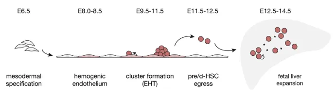
图1. 小鼠血细胞的发育过程
现状 ：单细胞 RNA 测序(scRNA-seq)已被⽤于描述⼩⿏肠道内胚层和原肠胚形成的景观，以及去解析双潜能肝脏⺟细胞向肝细胞和胆管细胞的分化。
-
已有的⼀项全⾯的 scRNA-seq 分析表明，在 E7.5-E10.5 期的⼩⿏中，肝脏发育从内胚层祖细胞特化到实质和⾮实质细胞谱系的多样化和建⽴过程；
-
另⼀项研究介绍了 Foxa2^eGFP ⼩⿏内胚层和肝细胞 E7.5 到 E15.5 的单细胞转录组图谱；
-
⼀项微阵列分析显示，从 E11.5 到正常成年肝脏的四个发育阶段具有不同的转录组谱。四个阶段的划分点是 E14.5, E17.5 和第 3 天；
-
另⼀项使⽤⼤量 RNA-seq 的研究更关注出⽣后 17.5 - 60 天的发育。然⽽，批量数据分析仅提供了不同细胞类型的平均值，从⽽混淆了细胞类型组成、细胞-细胞相互作⽤和功能异质性变化的关键信息。
目的 ：上述的分析都未曾涉及到出生后的小鼠肝脏发育的全过程，因此，为了对肝脏发育和成熟过程有一个更全面的了解。本文分离了出生后小鼠所有主要发育时期的肝细胞，以单细胞分辨率全面解析了出生后小鼠肝脏的发育过程，以提供⼀个详细的小鼠肝脏发育的单细胞图谱。
研究样本
出生后第1、3、7、21、56天（D1、D3、D7、D21、D56）的小鼠肝脏样本
研究方法
scRNA-seq + FISH
研究结果
1、单细胞转录组分析识别出生后早期肝脏中不同的肝细胞亚群
首先呢，作者收集了出生后D1、D3、D7、D21和D56的小鼠的肝脏细胞，这些细胞覆盖了从新生到成年的小鼠的整个肝脏发育时期。将所有分离的单细胞进行scRNA-seq分析，共获得了52,834个细胞的转录组。作者使用seurat的标准分析流程对来自5个时间点的细胞进行归一化处理，并进行了聚类和降维分析（图2A、2C）。同时根据人工挑选的已知标记的表达情况，从所有时期的整合图谱中共鉴定出31种细胞类型（图2B）。
这里可以看出不同时期的细胞组成还是有明显的差异的：D1、D3、D7三个时间点的细胞类型差异性没那么明显；D21和D56时期部分细胞群消失，同时也出现了专属于本时期的特定细胞群，如Hep-D21和Hep-D56，这俩细胞群也是作者后面研究的重点。
在这里简单地提上一句：好的研究真是让人读起来赏心悦目，marker基因的特异性都很强，复现的过程也是十分地流畅，真的是狠狠地爱这样的研究。
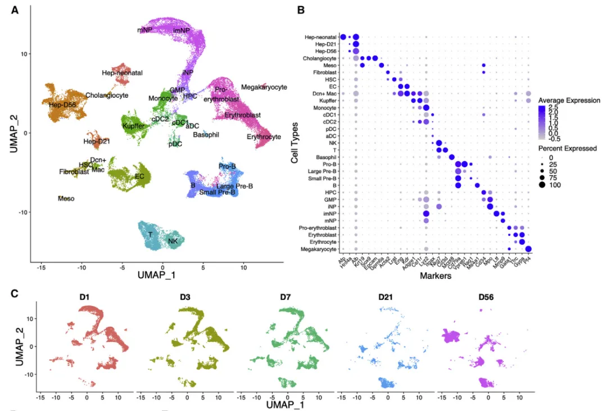
图2. 小鼠肝脏细胞图谱
上面说到了作者在不同的发育时期中找到了不同的Hep细胞群，也就是肝细胞群。接着呢，作者就先把这些肝细胞群提取出来进行了研究（他们的共用marker是Alb和Hnf4a）。 关于这些肝细胞呢，作者首先是将他们从总数据中提取出来进行了重新的聚类分析，并通过已有的时间信息对其进行了区分，同时也将不同时期表达的marker基因与时间信息进行了对应。我们可以看到：
-
D1、D3、D7：⼏种肝⺟细胞或肝细胞癌(HCC)的marker基因，如Afp、Ahsg和H19，在早期的肝细胞中⾼度表达(图3E)，这表明它们不是成熟肝细胞。同时，在D1、D3、D7时期的肝细胞中，增殖基因Mki67基因也高度表达，这也可以印证这一点；
-
D21：肝细胞处于过渡状态，Mki67、Afp、Ahsg 和 H19 表达较低(图3E和3F)，同时作为成年⼩⿏肝脏成熟肝细胞的marker基因Hnf4a、Cyp1a2和Cyp3a11的表达也较低(图3G)；
-
D56：成年⼩⿏肝脏成熟的肝细胞marker基因Hnf4a、Cyp1a2 和 Cyp3a11 表达相较于其他时间点就略高一些(图3G)。
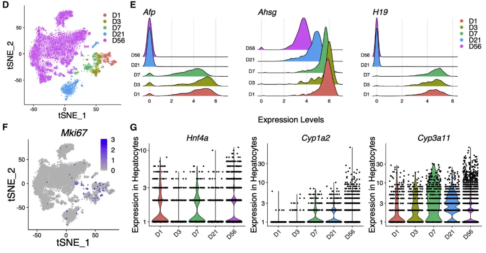
图3. 小鼠肝细胞基因表达
再接着呢，作者花了一张Figure的篇幅，对着五各时间点的肝细胞群分别进行了聚类研究。在这些结果中，也鉴定到了每个时间点固有的一些基因表达特征，同时在D21和D56两个时间点中鉴定出了2个罕见的肝细胞亚群，并通过小分子荧光原位杂交（smFISH）技术进行了验证。
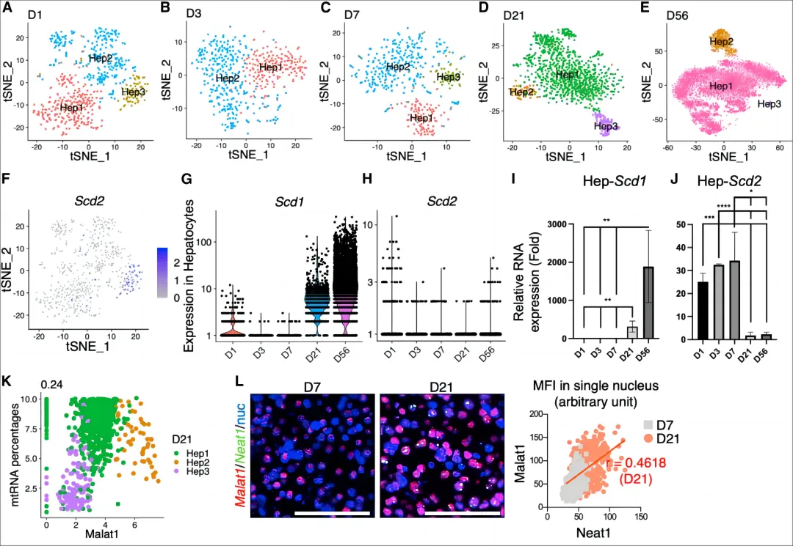
图4. scRNA-seq 识别每个时间点肝细胞中不同的转录组谱
2、肝细胞沿小叶轴逐步建立分区模式
作者从先前的一项研究中得知其根据scRNA-seq和smFISH数据将肝小叶分为9层。在此，作者用指定的层训练该数据集，并从肝细胞簇中推断出单个细胞的空间位置。第1层代表CV区的肝细胞，第9层接近PV。预测的D56的层分布（图5M）与所提出的成人肝脏分区模型的先验概率一致，密度在第8层达到峰值。然而，在早期时间点预测的分区没有显示出类似的模式（图5M），表明出生后肝脏中渐进的分区构建。肝细胞中18个最显著的分区标志基因的热图显示，从D1到D56，CV到PV逐渐转变。E-cadherin和CYP2E1的免疫染色始终显示，PV和CV肝细胞的表达相互增加。研究人员将预测的层映射回了D21和D56的tSNE可视化（图5O）。虽然与D3和D7相比，免疫染色在D21的CV和PV区域中检测到E-cadherin和CYP2E1有相反的表达模式（图5N），转录组分析显示，大多数来自不同层的肝细胞仍混合在D21，提示D21肝细胞的代谢区域尚未完全发育。与区域标记物的表达一致，分区肝细胞只能在D56被区分（图5O）。
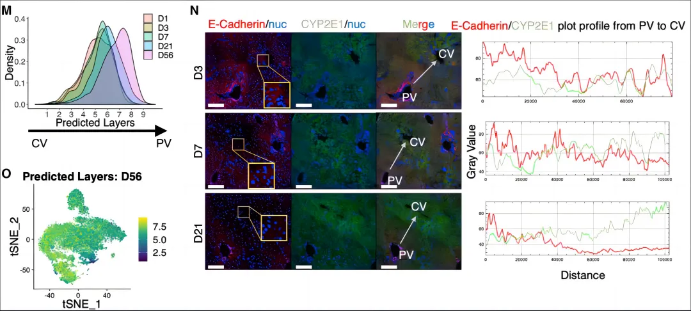
图5. 小鼠肝细胞分区模式的构建
同时，作者使用Monocle建立了发育轨迹，并计算了每个单细胞的拟时序（图6A、6B）。将D56肝细胞分为三组：D56-p.c.、D56-mid、D56p.p.，根据预测层和随机降采样，与其他时间点进行比较。由于从D1到D56收集了肝脏样本，实时点可以用来评估拟时间计算的准确性（图6C）。在D56，近中心的肝细胞（D56-p.c.）首先出现在运动轨迹上，其次是小叶中部（D56-mid），再次是汇管区（D56-p.p.）。与之一致的是，分区预测也显示门静脉周围肝细胞向D56方向稳定增长（图5M），表明门静脉周围肝细胞功能成熟较晚。
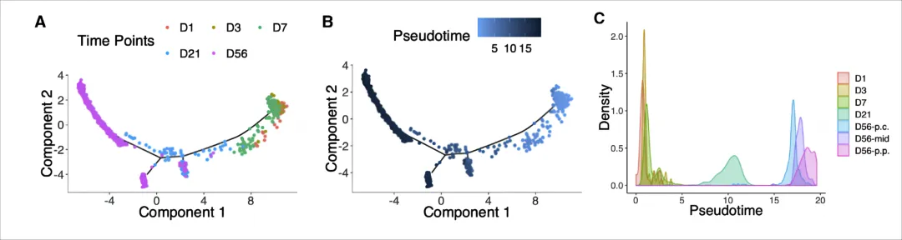
图6. 小鼠肝细胞发育轨迹分析
3、肝脏发育过程中转录因子的鉴定
作者通过拟时间对所有时间点的单个肝细胞进行了排序，并进行差异表达分析，以确定表达显著变化的基因作为拟时间的功能。然后，这些选定的基因被分组为6个簇的伪时间表达模式（图7D）。在cluster 1中发现了外周生物钟相关通路，其中基因从D1到D56逐渐增加。通过单细胞调控网络推断和聚类，研究人员捕获了36个转录因子（TFs）， 它们的表达和活性随着拟时间的变化而发生显著变化，包括昼夜节律的核心调控因子Bhlhe40（Dec1）。其表达和活性在后期急剧增加（图7E），与通路富集数据一致（图7D）。
4、肝细胞内各种代谢功能的发育
为了探索肝细胞中代谢功能的发育，作者计算了从KEGG数据库和MSigDB收集的基因集的通路富集分数，然后沿着拟时间对细胞进行排序，并筛选出得分沿轨迹显著变化的基因集。作者发现缺氧相关通路的表达从D1到D56持续下降（图7F）。在D56时，缺氧通路在PV中比在CV区域更明显地被抑制，而在三羧酸循环中观察到相反的模式（图7G）。而脂肪酸β-氧化在出生后立即出现一个高峰，随后随着时间的推移迅速下降，并在D56观察到门静脉周围肝细胞略有增加（图7H），产生大量的乙酰辅酶A。酮体相关通路表现出与β-氧化类似的模式，在出生后立即达到峰值（图7I）。参与胆固醇生物合成的甲羟戊酸途径的基因在新生儿中适度表达，但在D21达到峰值（图7J），表明该通路在新生小鼠肝脏中建立不完善。线粒体中的短脂肪酸延伸可能对新生肝脏中的肝细胞很重要，内质网在发育后期主导了这一过程（图7K）。
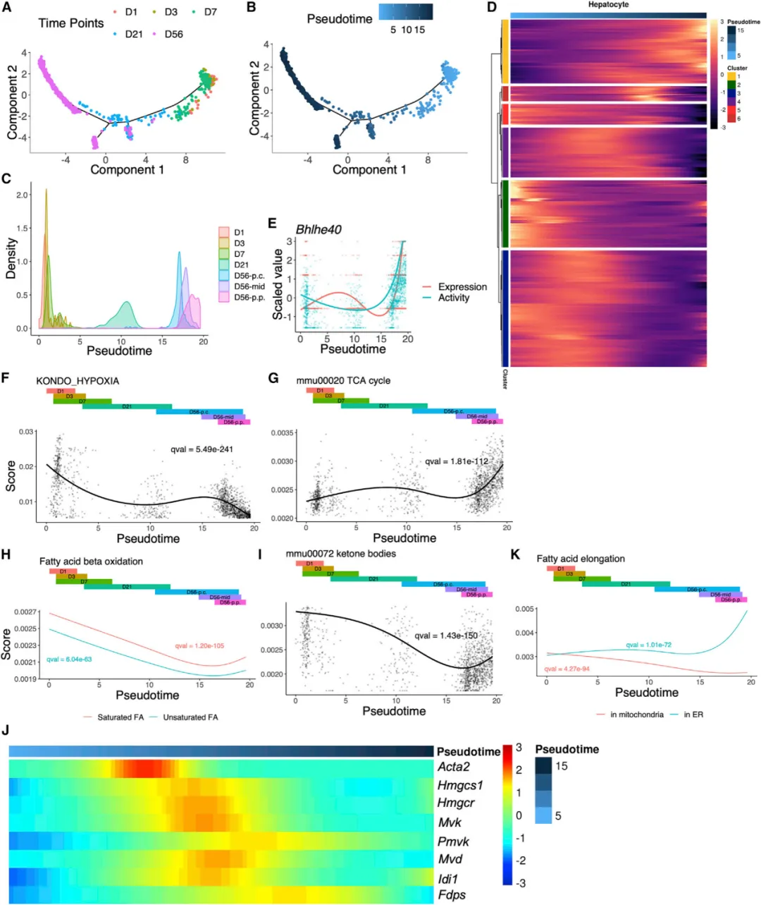
图7. 肝细胞转录因子活性及代谢功能的动态变化
5、肝脏内⽪细胞和间充质细胞的发育
所有五个时间点的肝脏内皮细胞（endothelial cells，ECs）都聚集成11个亚群（图8A），随着时间的推移，非肝窦内皮细胞（liver sinusoid endothelial cells，LSECs）共享类似的转录组。D56的LSECs构成2个大而连续的群体，分别为近汇管区和近中心的LSECs（EC1和EC2）（图8B）。相反，研究人员在未成熟LSECs（EC3~EC6）中观察到更高的异质性，没有明显的分区分离。在所有时间点检测到一小群表达增殖和细胞周期相关基因的EC9细胞，但呈减少的趋势（图8B）。根据细胞周期标志基因预测，所有EC9细胞均处于G2/M或S期，表明在发育中的肝脏中存在一群具有增殖潜能的LSEC。
通过将胚胎与本研究中新生儿内皮细胞结合数据（图8C、8D），研究人员构建了一条从E7.5到D7的轨迹（图8E）。分析表明，PV和CV区的内皮细胞采取不同的发育路径，PV区在出生后被重塑，该区域的肝细胞和内皮细胞协同分化。采用与肝细胞类似的方法，研究人员构建了LSECs的发育轨迹，并计算了每个单细胞的拟时序（图8F）。这种方法确定了包括Bhlhe40、Tcf4、Hmgb1和Meis2在内的多个转录因子在LSEC发育过程中表现出明显的表达和活性变化（图8G）。接下来，研究人员通过分离造血干细胞、成纤维细胞和间皮细胞，鉴定了更多的间充质细胞亚群（图8H），这些细胞亚群最初包含在其他间充质细胞中。Meso1和Meso2两个亚组尽管具有不同的转录组图谱，但有共同的间皮标志物Gpm6a、Upk3b和Wt1（图8H）。Alcam是小鼠肝脏中胚胎间皮细胞的标志物，在Meso1中表达，但在Meso2中不表达。值得注意的是，Meso1主要由新生期的细胞组成（图8I和图8J）。
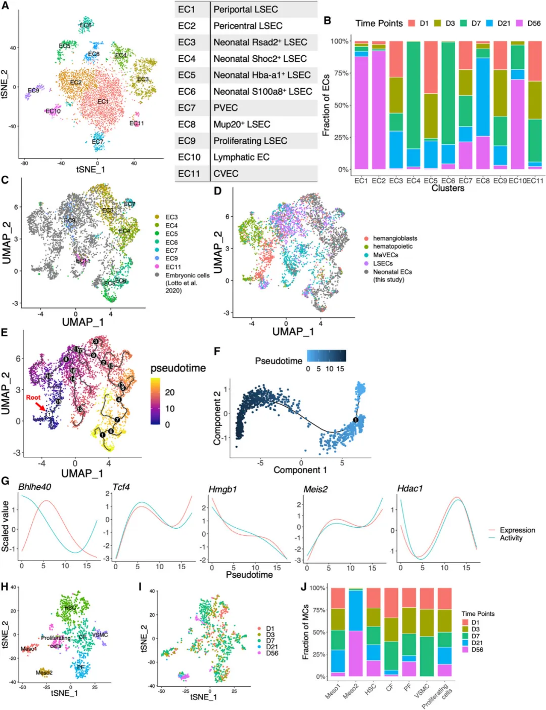
图8. 肝内皮细胞和间充质细胞的发育
6、造血和免疫细胞群的动态变化
从D1到D56的数据集显示了许多发育中的造血细胞，包括造血祖细胞（hematopoietic progenitor cell，HPCs）、粒细胞-单核细胞祖细胞（granulocyte-monocyte progenitors，GMPs）、B细胞、中性粒细胞和红细胞谱系（图2A）。HPCs和GMPs均表达造血前体细胞标志物Cd34（图2B）。通过力导向图分析推断了这些细胞类型的发育轨迹（图9A），证实了UMAP可视化显示的预测关系（图2A）。HPCs连接3条主要通路，分别向GMPs、红细胞谱系和B细胞方向发展。随后，GMPs分化为单核细胞和中性粒细胞。肝造血功能在出生后持续存在，但迅速消退，在D7后几乎检测不到（图9B）。在鉴定的11种T和NK细胞亚型（图9C）中，Treg细胞（图9D）显示出随时间的独特变化，在D7达到峰值（图9E）。研究人员比较了D7、D21和D56之间在Treg细胞中差异表达的基因，发现排名前两位的基因是Brd1和Gtf2h3（图9F），可能参与细胞增殖。
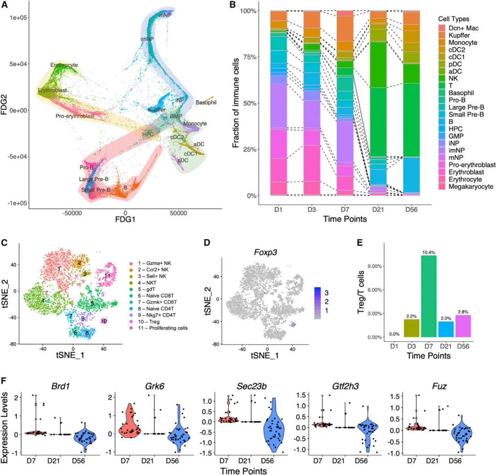
图9. 造血和免疫细胞群的动态变化
在UMAP上，一个Kupffer细胞簇位于树突状细胞（dendritic cells，DCs）和单核细胞附近（图2A）。该簇表达Kupffer细胞标记物Adgre1和Csf1r（图2B、10A、10B），在D7达到峰值（图10D）。在单独分析Kupffer细胞时，研究人员鉴定出6种亚型KC1~KC6，它们具有不同的基因表达谱和TF活性（图10C）。此外，研究人员识别出一个巨噬细胞亚群（Dcn+ Mac），其特征是高表达核心蛋白聚糖，这是富含亮氨酸的小蛋白多糖家族的成员。除了传统的Kupffer细胞标记物Adgre1和Csf1r（图2B、10A、10B和10E）外，Dcn+ Mac还表达一般的EC标记物Pecam1、Eng、Kdr，以及LSEC标记物Lyve1和Clec4g，尽管MaVEC标记物Vwf为阴性（图2B、10E和10F）。几乎所有的Dcn+ Mac都出现在D7（图10D），这促使研究人员进一步对这个独特的亚型进行深入研究。
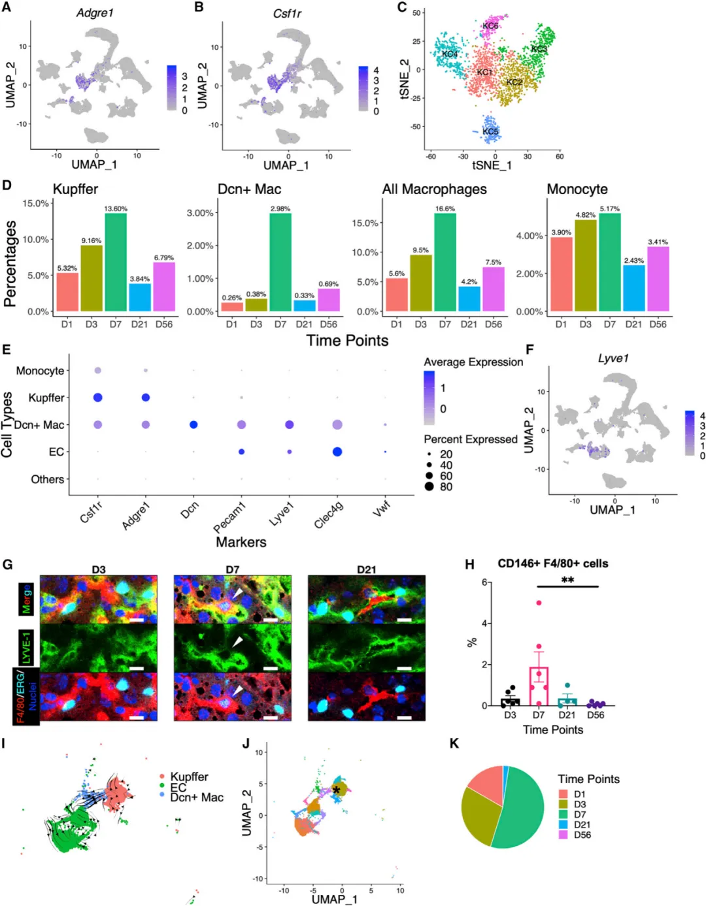
图10. 巨噬细胞亚型在出生后第7天左右短暂出现
通过LSEC标记物LYVE-1、内皮细胞特异性TF、ERG和巨噬细胞标记物F4/80的免疫共染，验证了Dcn+ Mac的存在及其在D7的丰度（图10G）。FACS分析也检测到这种细胞类型，并在D7验证了其峰值水平（图10H）。RNA速度分析显示，Dcn+ Mac的发育轨迹来自Kupffer细胞而非ECs（图10I）。研究人员通过噬菌体画像绘制了Dcn+ Mac中显著上调的前10个基因。过渡点的Kupffer细胞群（过渡KC）在D1、D3和D7被鉴定（图10K），其在新生期显示出分化潜能。在过渡KC和其他远离Dcn+Mac的Kupffer细胞之间进行差异基因表达分析，研究人员鉴定了在过渡KC中选择性表达的基因，如Fcna、Marco、Cd163、Cd209f等（图10J）。通过CellPhoneDB的配体-受体分析，研究人员确定了与Dcn+ Mac相互作用的细胞类型，包括HSCs、成纤维细胞、间皮细胞、胆管上皮细胞、VSMCs和所有ECs亚型。这些细胞类型与Kupffer细胞之间的相互作用较少（图11A）。然后，研究人员检查了与Dcn+ Mac相关的信号串扰，并与Kupffer细胞进行了比较（图11B），揭示了Treg在D7积累的意义，以及Treg与Dcn+ Mac细胞之间潜在的串扰。
7、肝细胞和NPC之间的细胞间通讯
使用上述相同的方法，研究人员分析了肝细胞和NPCs之间的串扰，以及出生后早期细胞间信号传导的动态变化。分别对所有5个时间点进行配体-受体分析，鉴定了LSECs和肝细胞之间的RSPO1/3-LGR5相互作用（图11C）。RSPO3-LGR5在所有时间点均显著表达，而RSPO1-LGR5仅在新生儿期表达。RSPO与LGR5的结合，存在于近中心的肝细胞上，促进Wnt信号传导，调节近中心的区的分区代谢活动。在所有时间点的Kupffer细胞和肝细胞之间也发现了这一信号事件（图11D）。研究人员发现，对于几乎所有与肝细胞密切相互作用的细胞类型，与其他时间点相比，最活跃的串扰发生在D7。一些相互作用对，包括肝细胞与LSECs之间的PDGFRB-PDGFD（图11C）、肝细胞与Kupffer细胞之间的NOV-NOTCH1 （图11D），也仅在D7被鉴定。综上，出生后肝脏中的一个关键时间点D7，涉及许多分子和细胞活动和通讯。
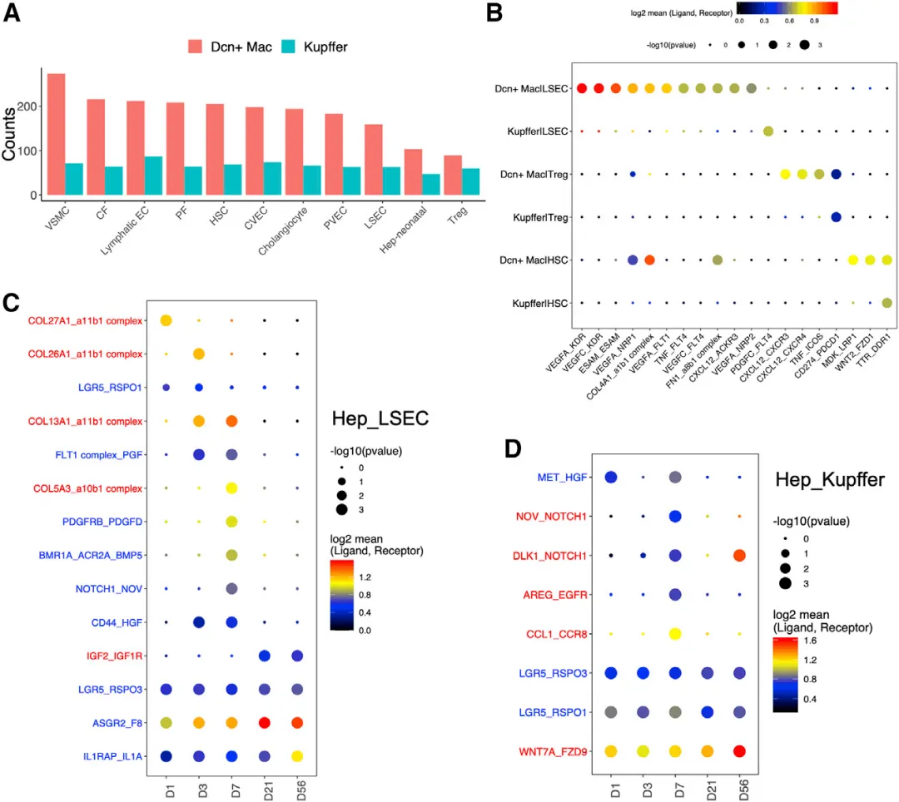
图11. 预测的肝细胞间相互作用
结论
本研究在单细胞分辨率水平上详细地描述了新生小鼠肝脏如何发育成一个主要的代谢器官。轨迹分析显示，在代谢区域构建中肝细胞和LSECs的发育、协同发育和功能成熟。肝细胞类型之间复杂的相互作用显然参与了早期阶段的协调发育程序。此外，研究人员在D7鉴定了一组特殊的巨噬细胞，表现出巨噬细胞和内皮细胞的混合表型。细胞间相互作用分析表明，Dcn+ Mac可能在调节窦状血管化和Treg细胞中发挥作用。
二、物种
小鼠（出生后1天，3天，7天，21天，56天的小鼠）
三、数据链接
https://www.ncbi.nlm.nih.gov/geo/query/acc.cgi?acc=GSE171993
四、细胞类型
新生小鼠和成体小鼠肝脏中所有细胞类型
五、文章的分析思路
该文章的分析思路为：
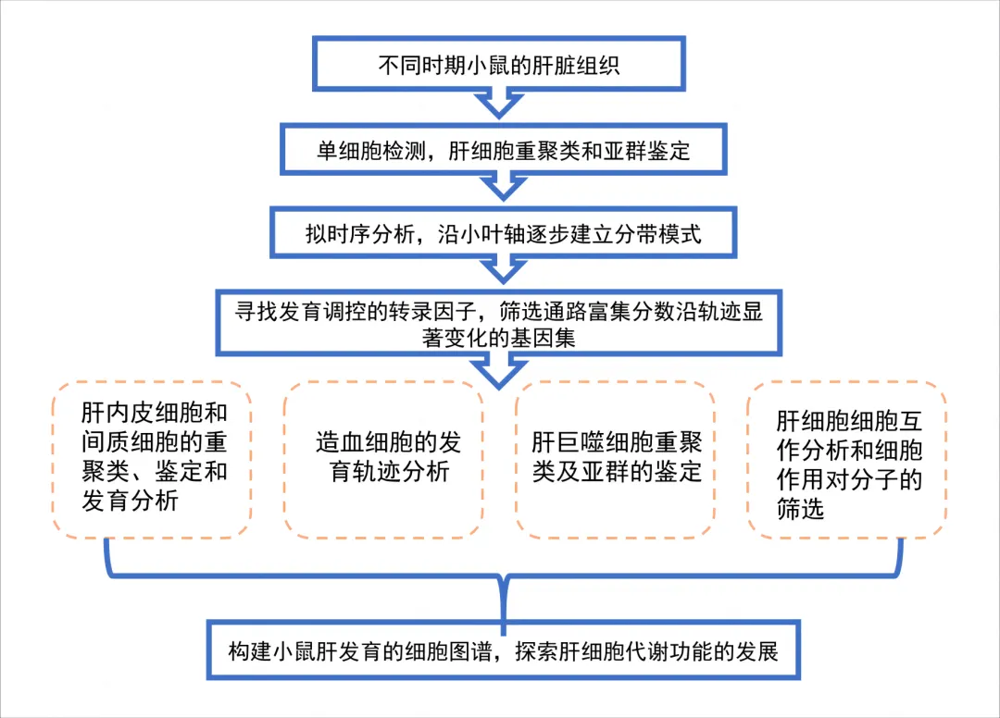
六、复现图片集锦
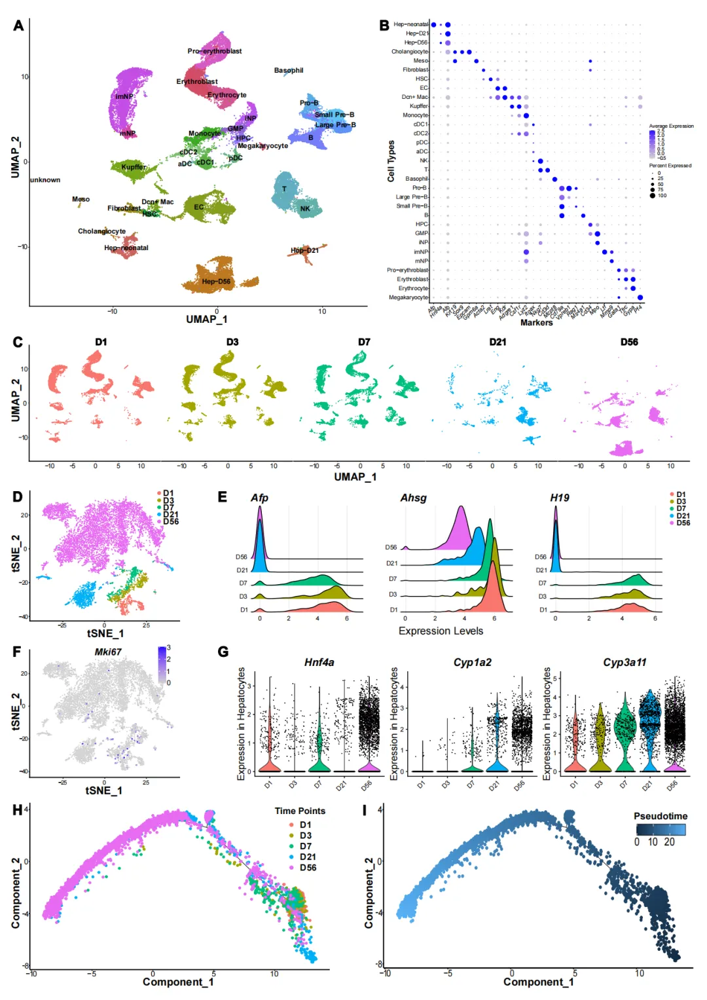
一、复写内容
本次文章复现主要集中在Figure1的细胞类型注释部分以及Figure3的拟时序分析部分。
1、我们复现了文章的分群情况并参考原文的marker基因对我们新产生的分群结果进行了细胞类型的注释，注释结果和原文基本相符，我们也提供了两组注释的对应信息；
2、我们集中分析了前三张Figure中的主角Hep细胞群，将他的时间相关分析进行了复现；
3、本次复现的图片如下：
二、复现过程
1、载入包，读入数据，创建seurat对象：
1) 载入分析所需要的R包
# 载入分析所需要的R包
library(dplyr)
library(Seurat)
library(patchwork)
##
## Attaching package: ‘dplyr’
##
## The following objects are masked from ‘package:stats’:
##
## filter, lag
##
## The following objects are masked from ‘package:base’:
##
## intersect, setdiff, setequal, union
##
## Attaching SeuratObject
2) 读入数据
# 读入h5格式的矩阵文件
mmu <- Read10X_h5("../00_data/GSE171993_filtered_feature_bc_matrix.h5")
# 查看矩阵信息
head(mmu)
## 6 x 65891 sparse Matrix of class "dgCMatrix"
## [[ suppressing 34 column names ‘AAACCTGCACCAGTTA-1’, ‘AAACCTGCACCATGTA-1’, ‘AAACCTGGTAATAGCA-1’ ... ]]
##
## 4933401J01Rik . . . . . . . . . . . . . . . . . . . . . . . . . . . . . . . . .
## Gm26206 . . . . . . . . . . . . . . . . . . . . . . . . . . . . . . . . .
## Xkr4 . . . . . . . . . . . . . . . . . . . . . . . . . . . . . . . . .
## Gm18956 . . . . . . . . . . . . . . . . . . . . . . . . . . . . . . . . .
## Gm37180 . . . . . . . . . . . . . . . . . . . . . . . . . . . . . . . . .
## Gm37363 . . . . . . . . . . . . . . . . . . . . . . . . . . . . . . . . .
##
## 4933401J01Rik . ......
## Gm26206 . ......
## Xkr4 . ......
## Gm18956 . ......
## Gm37180 . ......
## Gm37363 . ......
##
## .....suppressing 65857 columns in show(); maybe adjust options(max.print=, width=)
## ..............................
# 查看矩阵的行数（基因数）和列数（细胞数）
nrow(mmu)
## [1] 46078
ncol(mmu)
## [1] 65891
# notes: 可以看出原始矩阵是一个46078个基因*65891个细胞的矩阵
3) 创建Seurat对象
# 创建seurat对象，先过滤掉了少于在3个细胞中表达的基因和少于200个基因表达的细胞。
mmu <- CreateSeuratObject(counts = mmu, project = "mmu_liver", min.cells = 3, min.features = 200)
# 参考原文方法部分参数设置：genes expressed in less than 3 cells were removed.
# 查看该对象mmu
mmu
## An object of class Seurat
## 24043 features across 61360 samples within 1 assay
## Active assay: RNA (24043 features, 0 variable features)
## 2 layers present: counts, data
# 此时可以看到基因数量和细胞数量都有了一定程度的减少。基因数：46078 → 24043；细胞数：65891 → 61360
# notes: 可以看出当前矩阵是一个24043个基因*61360个细胞的矩阵
2、质控过滤
1) 计算线粒体基因的比例
# 计算线粒体基因百分比，mt-开头的基因为线粒体基因
mmu[["percent.mt"]] <- PercentageFeatureSet(mmu, pattern = "^mt-")
#查看meta.data，其中多了percent.mt这一列信息
head(mmu@meta.data)
## orig.ident nCount_RNA nFeature_RNA percent.mt
## AAACCTGCACCAGTTA-1 SeuratProject 11685 2913 0.9328199
## AAACCTGCACCATGTA-1 SeuratProject 18998 3483 0.7842931
## AAACCTGGTGAAATCA-1 SeuratProject 10178 2787 1.0709373
## AAACCTGTCAGTCCCT-1 SeuratProject 20220 4748 0.8259149
## AAACGGGAGGACCACA-1 SeuratProject 7958 1215 0.3769791
## AAACGGGTCAAACCAC-1 SeuratProject 50000 5620 0.8180000
2) 质控前检测质控指标
# 创建pdf文件，设置画布的宽高
pdf("../02_result/01_seurat/01_before_qc.pdf", height=6, width=10)
# 将结果分为两页输出
par(mfrow = c(2, 1))
# 常规三指标的小提琴图（每个细胞中检测到的基因数，每个基因中检测到的分子总数，线粒体基因百分比）
p1 <- VlnPlot(mmu, features = c("nFeature_RNA", "nCount_RNA", "percent.mt"), ncol = 3)
# 常规三指标的的两两间关系
p2 <- FeatureScatter(mmu, feature1 = "nCount_RNA", feature2 = "percent.mt")
p3 <- FeatureScatter(mmu, feature1 = "nCount_RNA", feature2 = "nFeature_RNA")
# 第一张图出p1
p1
# 第二张图出p2和p3
p2 + p3
# 关闭pdf文件并保存结果
dev.off()
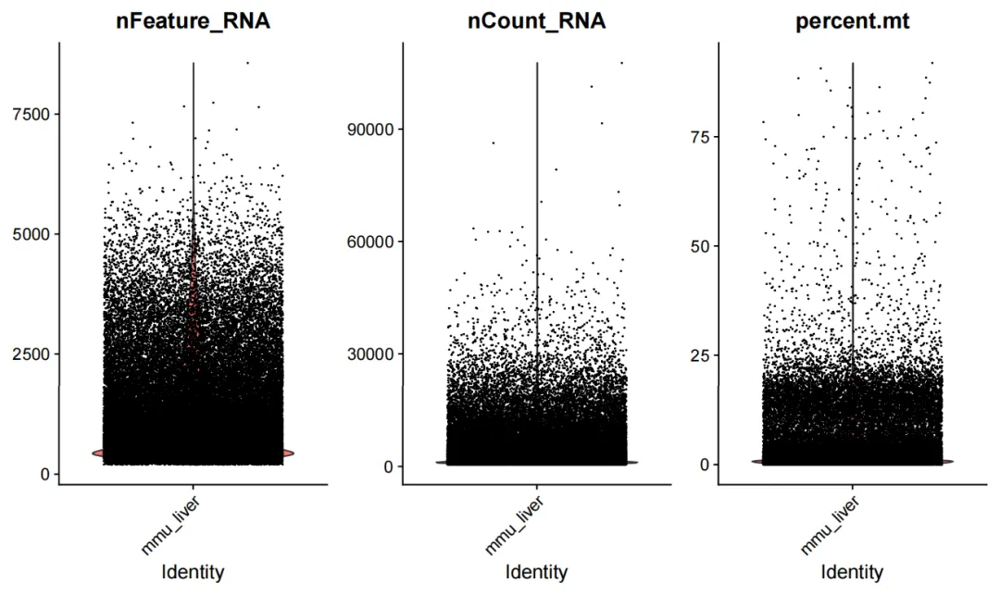
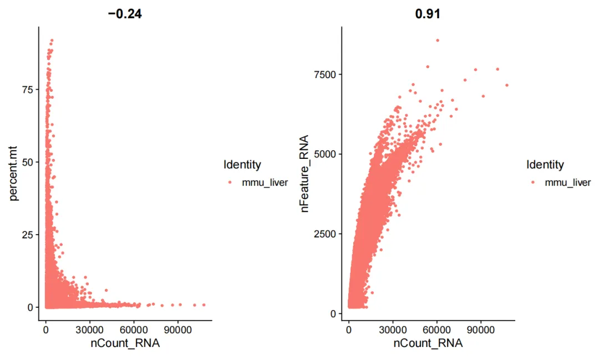
3) 质控过滤
# 质控指标参考文章方法部分的描述：cells failed to meet following criteria were removed: 1) the number of genes detected in each cell should be more than 200 but less than 6500; 2) the UMIs of mitochondrial genes should be less than 10% of total UMI.
# 整理后指标情况如下：①过滤掉少于200个基因表达和多余6500个基因表达的细胞；②过滤掉线粒体基因百分比超过10%的细胞。
mmu <- subset(mmu, subset = nFeature_RNA > 200 & nFeature_RNA < 6500 & percent.mt < 10)
# 查看本次过滤后的对象mmu
mmu
## An object of class Seurat
## 24043 features across 52948 samples within 1 assay
## Active assay: RNA (24043 features, 0 variable features)
## 2 layers present: counts, data
# 此时可以看到基因数量没变（24043个基因），细胞的数量又减少了一波（52948个细胞）
# 文章的方法部分提到的过滤之后的基因数量是24057，细胞数量是52834，结果差别不大，可以往后继续进行。（这个问题应该主要是Seurat的版本引起的，文章中的Seurat是3.0.2，我此次使用的是4.1.0）
4) 质控后检测质控指标
# 创建pdf文件，设置画布的宽高
pdf("../02_result/01_seurat/01_after_qc.pdf", height=6, width=10)
# 将结果分为两页输出
par(mfrow = c(2, 1))
# 常规三指标的小提琴图（每个细胞中检测到的基因数，每个基因中检测到的分子总数，线粒体基因百分比）
p1 <- VlnPlot(mmu, features = c("nFeature_RNA", "nCount_RNA", "percent.mt"), ncol = 3)
# 常规三指标的的两两间关系
p2 <- FeatureScatter(mmu, feature1 = "nCount_RNA", feature2 = "percent.mt")
p3 <- FeatureScatter(mmu, feature1 = "nCount_RNA", feature2 = "nFeature_RNA")
# 第一张图出p1
p1
# 第二张图出p2和p3
p2 + p3
# 关闭pdf文件并保存结果
dev.off()
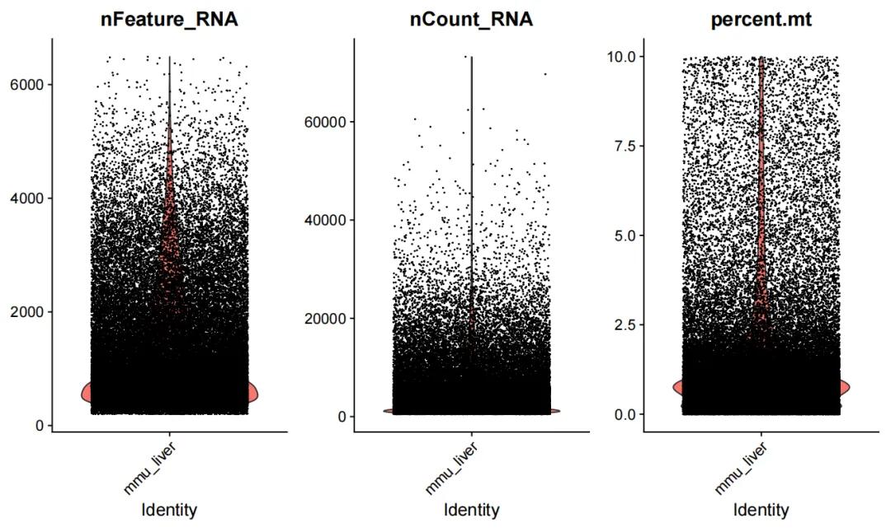
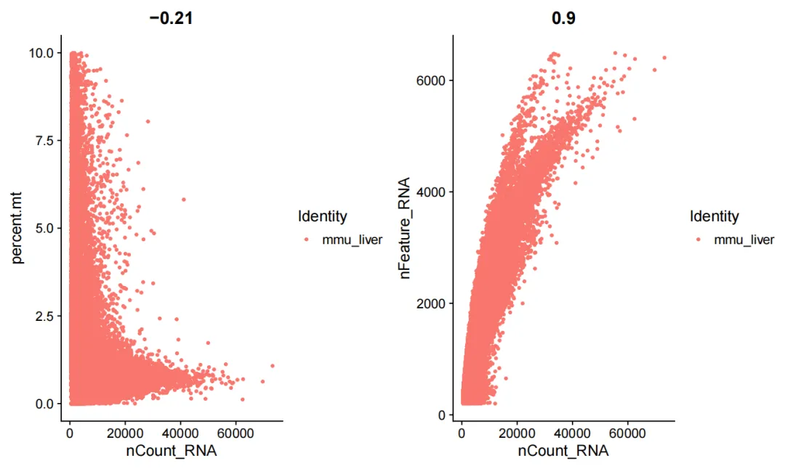
3、数据标准化
# 质控指标参考文章方法部分的描述：After filtering, the raw expression matrix was normalized by the total expression, multiplied by scale factor 10,000, and log transformed.
# 所以这里设置的因子值为10000
mmu <- NormalizeData(mmu, normalization.method = "LogNormalize", scale.factor = 10000)
## Performing log-normalization
## 0% 10 20 30 40 50 60 70 80 90 100%
## [----|----|----|----|----|----|----|----|----|----|
## **************************************************|
4、鉴定高可变基因
# 这一部分的参数文章方法部分没有明确说明，我们采取官网默认参数，鉴定前2000个高可变基因
mmu <- FindVariableFeatures(mmu, selection.method = "vst", nfeatures = 2000)
## Calculating gene variances
## 0% 10 20 30 40 50 60 70 80 90 100%
## [----|----|----|----|----|----|----|----|----|----|
## **************************************************|
## Calculating feature variances of standardized and clipped values
## 0% 10 20 30 40 50 60 70 80 90 100%
## [----|----|----|----|----|----|----|----|----|----|
## **************************************************|
# 鉴定前10个高变基因
top10 <- head(VariableFeatures(mmu), 10)
# 按照官网流程，出图展示所有的高可变基因
# 创建pdf文件，设置画布的宽高
pdf("../02_result/01_seurat/01_highly_variable_genes.pdf", height=6, width=10)
# 绘制所有高可变基因
p1 <- VariableFeaturePlot(mmu)
# 绘制所有高可变基因，同时展示top10的高可变基因
p2 <- LabelPoints(plot = p1, points = top10, repel = TRUE)
# 在同一张图上绘制两个图
p1 + p2
# 关闭pdf文件并保存结果
dev.off()
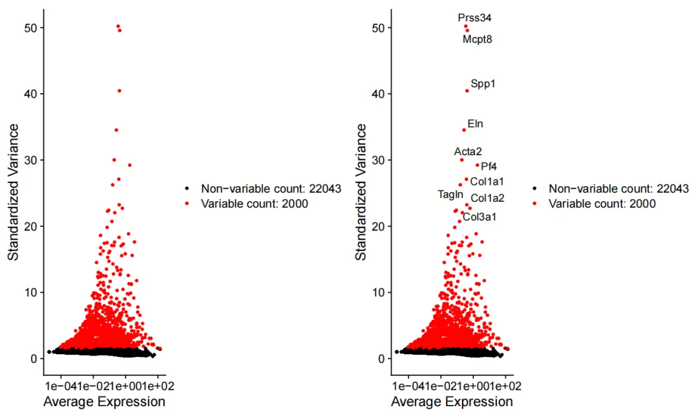
5、缩放数据
# 选定mmu对象的所有行名信息，即所有基因名信息
all.genes <- rownames(mmu)
# 对所有基因进行数据缩放
mmu <- ScaleData(mmu, features = all.genes)
## Centering and scaling data matrix
## |======================================================================| 100%
6、PCA降维
mmu <- RunPCA(mmu, features = VariableFeatures(object = mmu))
## PC_ 1
## Positive: Srgn, Hbb-bs, Crip1, Hmgn2, Plac8, Hba-a1, Lgals1, Lyz2, Hba-a2, Npm1
## Hbb-bt, Stfa1, Lgals3, Klf2, BC100530, Ncl, Camp, Ngp, Gm5483, Anxa1
## Pglyrp1, Fos, S100a6, Cst3, Ube2c, Ly6c2, Hsp90aa1, Dut, Hist1h2ap, Rgs10
## Negative: Serpina1c, Rbp4, Gc, Apoc4, Serpina3k, Hpx, Fgg, Serpina1b, Serpina1d, Apoc3
## Fgb, Fabp1, Serpina1a, Alb, Apoa1, H2-Q10, Apoa2, Fga, Cps1, Ttr
## Scd1, Pck1, Gnmt, Uox, Mup3, Aldob, Ambp, Apoh, Serpina1e, Trf
## PC_ 2
## Positive: Pglyrp1, Stfa1, Tuba4a, Stfa2l1, BC100530, Gm5483, Stfa3, Lcn2, Hba-a1, Hbb-bs
## Stfa2, Hbb-bt, Ifitm6, Hba-a2, Car2, Ly6c2, Ngp, Camp, 2010005H15Rik, Ltf
## Trem3, I830127L07Rik, Anxa1, Ltb4r1, Rrm2, Rgcc, Cebpe, Gypa, Chil3, Ube2c
## Negative: Sparc, Igfbp7, Col4a1, Ehd3, Serpinh1, Gng11, Bgn, Eng, Ramp2, Id3
## Maf, Gpihbp1, Tspan7, Kdr, Nid1, Mest, Ppic, Nrp1, Col4a2, Ppap2b
## Clec4g, Dnase1l3, Egfl7, Stab2, Fermt2, Ptprb, Gpr182, Cdh5, Eva1b, Ccdc80
## PC_ 3
## Positive: C1qc, C1qa, Cd5l, Aif1, C1qb, Csf1r, Fcna, Clec4f, Cfp, Vsig4
## Adgre1, Ctss, Wfdc17, Marco, Timd4, Cd68, Ctsc, AF251705, Il18bp, Folr2
## Ccl24, Hmox1, Clec4n, Mpeg1, Slc40a1, Fcgr1, Ear2, Sdc3, Slc11a1, Cd300a
## Negative: Col1a2, Col3a1, Col5a1, Car2, Col1a1, Fstl1, Col14a1, Dcn, Meg3, Mfap2
## Col6a1, Col5a2, Gypa, Col6a3, Serpinh1, Lum, Postn, Itm2a, Rhd, Lhfp
## Col6a2, Cpox, Mdk, Hmgb3, Hmbs, Bgn, Cldn13, Pcolce, Fbn1, Slc4a1
## PC_ 4
## Positive: Col3a1, Col1a2, Col1a1, Meg3, Dcn, Col14a1, Col6a1, Postn, Mfap2, Fstl1
## Lum, Col6a3, Col6a2, Mdk, Itm2a, Lhfp, Adamts2, Dlk1, Mmp2, Col5a1
## Igfbp3, Rian, Tcf21, Eln, Snhg18, Fbln5, Col5a2, Colec11, Fbn1, Cygb
## Negative: Gpihbp1, Dnase1l3, Clec4g, Kdr, Aqp1, Ptprb, Gpr182, Fcgr2b, Fam167b, Egfl7
## Cldn5, Stab2, Ehd3, Ppap2b, Ramp2, Bmp2, Oit3, Stab1, Eng, Gng11
## Tspan7, Adgrf5, Maf, Fabp4, Clec14a, Adgrl4, Flt4, Ppap2a, Flt1, Tm4sf1
## PC_ 5
## Positive: Prdx2, Car2, Blvrb, Cpox, Glrx5, Hmbs, Mgst3, Gypa, Rhd, Cldn13
## Klf1, Tspan33, Hemgn, Ubac1, Alad, Gstm5, Slc4a1, Rhag, Ermap, Tspo2
## Smim1, Hsp90aa1, Hba-a1, Nxpe2, Hbb-bt, Hspe1, Hba-a2, Npm1, Tmem14c, Hbb-bs
## Negative: Stfa2l1, Stfa2, Stfa3, Pglyrp1, Lcn2, Gm5483, 2010005H15Rik, Anxa1, Ifitm6, BC100530
## Stfa1, Ltf, Trem3, Chil1, Ngp, Wfdc21, Camp, I830127L07Rik, Slpi, Gm5416
## Cd177, Retnlg, Ltb4r1, Mmp9, Mmp8, Chil3, Cebpe, BC117090, Thbs1, AA467197
print(mmu[["pca"]], dims = 1:5, nfeatures = 5)
## PC_ 1
## Positive: Srgn, Hbb-bs, Crip1, Hmgn2, Plac8
## Negative: Serpina1c, Rbp4, Gc, Apoc4, Serpina3k
## PC_ 2
## Positive: Pglyrp1, Stfa1, Tuba4a, Stfa2l1, BC100530
## Negative: Sparc, Igfbp7, Col4a1, Ehd3, Serpinh1
## PC_ 3
## Positive: C1qc, C1qa, Cd5l, Aif1, C1qb
## Negative: Col1a2, Col3a1, Col5a1, Car2, Col1a1
## PC_ 4
## Positive: Col3a1, Col1a2, Col1a1, Meg3, Dcn
## Negative: Gpihbp1, Dnase1l3, Clec4g, Kdr, Aqp1
## PC_ 5
## Positive: Prdx2, Car2, Blvrb, Cpox, Glrx5
## Negative: Stfa2l1, Stfa2, Stfa3, Pglyrp1, Lcn2
7、确定维度
# 绘制肘形图确定降维所需要的维度
# 创建pdf文件，设置画布的宽高
pdf("../02_result/01_seurat/02_elbowplot.pdf", height=10, width=10)
# 绘制肘形图
ElbowPlot(mmu, ndims = 100)
# 关闭pdf文件并保存结果
dev.off()
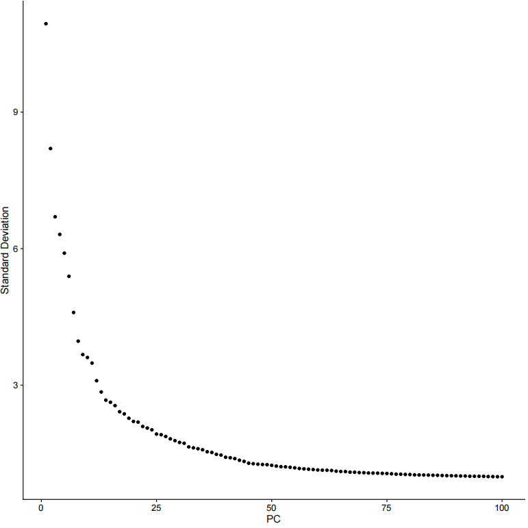
8、细胞聚类
# 这一步本应参考上一步的肘形图，但是作者文章中给了参数：In brief, PCA was performed first, and 75 PCs were loaded for UMAP and tSNE dimensionality reduction. To find clusters, the same PCs were imported into FindClusters, a SNN graph-based clustering algorithm, with resolution = 3.0.
# 我们就主要按照文章给的参数来，PC选前75个，分辨率设置为3.0（实际上这个75的值和肘形图的结果还是相吻合的）
# 计算最邻近细胞
mmu <- FindNeighbors(mmu, dims = 1:75)
## Computing nearest neighbor graph
## Computing SNN
# 聚类细胞
mmu <- FindClusters(mmu, resolution = 3.0)
## Modularity Optimizer version 1.3.0 by Ludo Waltman and Nees Jan van Eck
##
## Number of nodes: 52948
## Number of edges: 2425674
##
## Running Louvain algorithm...
## 0% 10 20 30 40 50 60 70 80 90 100%
## [----|----|----|----|----|----|----|----|----|----|
## **************************************************|
## Maximum modularity in 10 random starts: 0.8810
## Number of communities: 74
## Elapsed time: 22 seconds
9、非线性降维
# 先跑一个UMAP的降维
mmu <- RunUMAP(mmu, dims = 1:75)
## 09:59:16 UMAP embedding parameters a = 0.9922 b = 1.112
## 09:59:16 Read 52948 rows and found 75 numeric columns
## 09:59:16 Using Annoy for neighbor search, n_neighbors = 30
## 09:59:16 Building Annoy index with metric = cosine, n_trees = 50
## 0% 10 20 30 40 50 60 70 80 90 100%
## [----|----|----|----|----|----|----|----|----|----|
## **************************************************|
## 09:59:28 Writing NN index file to temp file /05_tmp/Rtmp9H0jye/file2fef71515b6f(这里隐藏一下电脑文件结构信息)
## 09:59:28 Searching Annoy index using 1 thread, search_k = 3000
## 09:59:55 Annoy recall = 100%
## 09:59:55 Commencing smooth kNN distance calibration using 1 thread with target n_neighbors = 30
## 09:59:59 Initializing from normalized Laplacian + noise (using irlba)
## 10:00:12 Commencing optimization for 200 epochs, with 2452654 positive edges
## Using method 'umap'
## 0% 10 20 30 40 50 60 70 80 90 100%
## [----|----|----|----|----|----|----|----|----|----|
## **************************************************|
## 10:01:40 Optimization finished
# 再跑一个TSNE的降维
mmu <- RunTSNE(mmu, dims = 1:75)
# 输出降维分析的结果
# 创建pdf文件，设置画布的宽高
pdf("../02_result/01_seurat/03_dimplot.pdf", height=10, width=12)
# 将结果分为两页输出
par(mfrow = c(2, 1))
# 绘制UMAP图的结果
DimPlot(mmu, reduction = "umap", label = TRUE)
# 绘制TSNE图的结果
DimPlot(mmu, reduction = "tsne", label = TRUE)
# 关闭pdf文件并保存结果
dev.off()
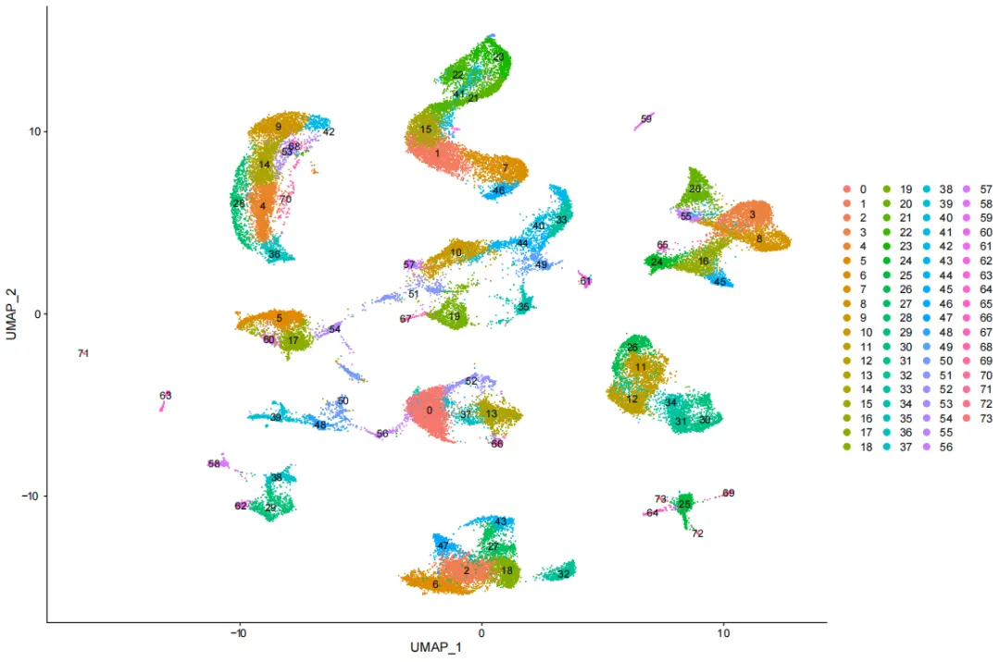
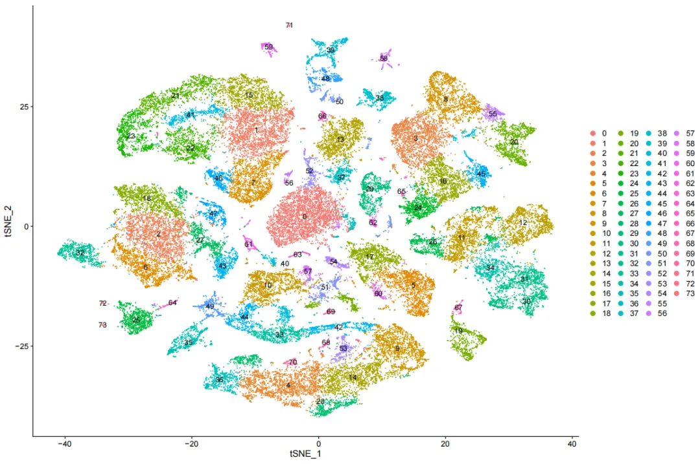
10、存储结果
# 存储结果为rds文件
saveRDS(mmu, file = "../02_result/01_seurat/04_unanno.rds")
11、绘制marker基因表达
1) 读入文章Figure 1B中的marker基因列表（自己整理的）
# 读入基因列表，存储在markers中
markers <- read.table('../02_result/01_seurat/0501_markers.list', quote="\n")
# 查看基因信息
markers$V1
## [1] "Afp" "Hnf4a" "Alb" "Krt19" "Sox9" "Epcam" "Gpm6a" "Acta2"
## [9] "Lrat" "Eng" "Kdr" "Adgre1" "Csf1r" "Lyz2" "Itgax" "Nkg7"
## [17] "Cd3d" "Mcpt8" "Cd79a" "Vpreb1" "Rag1" "Ms4a1" "Cd34" "Mpo"
## [25] "Ltf" "Mmp9" "Gata1" "Tfrc" "Gypa" "Pf4"
2) 绘制marker基因的表达情况
# 这里主要用Featureplot和Dotplot，两者的展现结果比较好，便于对应原文Figure 1B进行注释
# Featureplot
# 创建pdf文件，设置画布的宽高
pdf('../02_result/01_seurat/0501_Featureplot.pdf', width=20, height=150)
# 绘制marker基因的Featureplot
FeaturePlot(mmu, features = features, ncol = 2)
# 关闭pdf文件并保存结果
dev.off()
# Dotplot
# 创建pdf文件，设置画布的宽高
pdf('../02_result/01_seurat/0501_Dotplot.pdf', width=12, height=30)
# 绘制marker基因的Dotplot
DotPlot(mmu, features = features) + RotatedAxis()
# 关闭pdf文件并保存结果
dev.off()
# Featureplot的结果由于图片过多，因此只展示部分
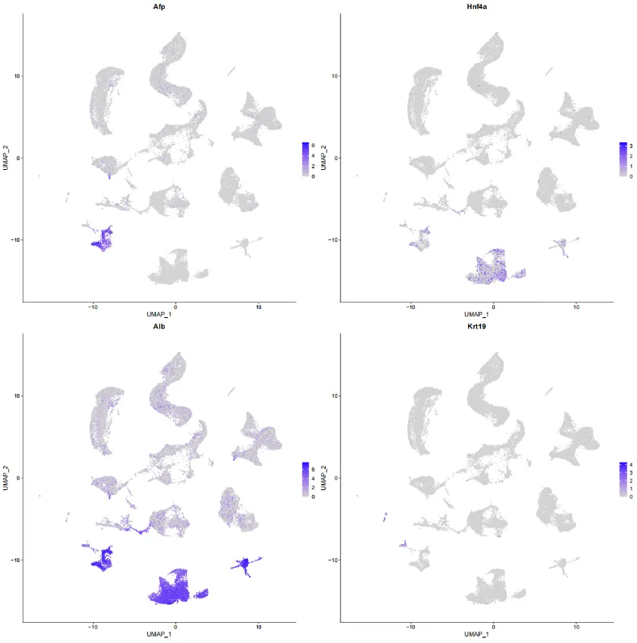
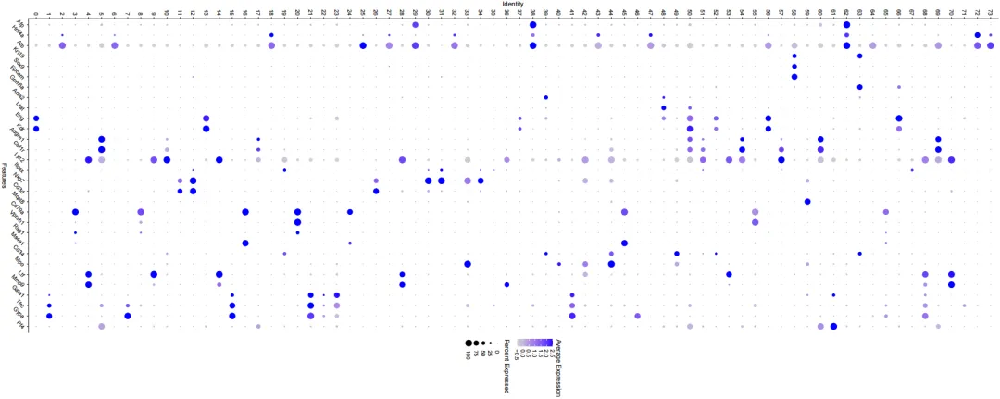
12、统计不同簇的细胞数量
1) 统计当前数据中的细胞数量分布
# 统计不同簇的细胞数量，用于后面对应原文中的细胞数量，作为注释的一个参考标准
table(mmu@meta.data$seurat_clusters)
## 0 1 2 3 4 5 6 7 8 9 10 11 12 13 14 15
## 2900 1955 1790 1774 1752 1465 1437 1424 1413 1375 1300 1277 1265 1244 1229 1193
## 16 17 18 19 20 21 22 23 24 25 26 27 28 29 30 31
## 1177 1148 1146 1052 1035 1020 891 865 810 798 756 746 728 727 727 727
## 32 33 34 35 36 37 38 39 40 41 42 43 44 45 46 47
## 681 666 644 628 555 555 549 523 495 489 480 479 471 451 446 438
## 48 49 50 51 52 53 54 55 56 57 58 59 60 61 62 63
## 418 412 394 361 358 324 274 252 242 239 215 196 191 174 151 150
## 64 65 66 67 68 69 70 71 72 73
## 136 129 115 115 105 96 83 42 40 40
# 将数量信息传递给cluster_number
cluster_number <- table(mmu@meta.data$seurat_clusters)
# 将数量信息导出到文件中
write.table(cluster_number, file = "../02_result/01_seurat/0501_cluster_number.list", row.names = FALSE, sep = "\t")
2) 统计作者提供的注释数据中的细胞数量分布
# 读入作者提供的注释数据
metadata <- read.csv("../00_data/GSE171993_metadata.csv")
# 统计不同细胞类型的细胞数量
table(metadata$celltype)
##
## aDC B Basophil cDC1
## 111 2475 196 984
## cDC2 Cholangiocyte Dcn+ Mac EC
## 362 210 377 5440
## Erythroblast Erythrocyte Fibroblast GMP
## 4143 1649 520 437
## Hep-D21 Hep-D56 Hep-neonatal HPC
## 1015 6703 1419 496
## HSC imNP iNP Kupffer
## 400 5846 1180 3190
## Large Pre-B Megakaryocyte Meso mNP
## 1639 175 148 535
## Monocyte NK pDC Pro-B
## 1601 2053 630 1023
## Pro-erythroblast Small Pre-B T
## 2813 1709 3355
# 将数量信息传递给cell_number
cell_number <- table(metadata$celltype)
# 将数量信息导出到文件中
write.table(cell_number, file = "../02_result/01_seurat/0501_cell_numbers.list", row.names = FALSE, sep = "\t")
13、注释细胞类型
1) 手动注释细胞类型
# 该注释过程参考Figure 1的A和B两张图，将我们自己输出的UMAP和marker表达情况与原文中的图相对应。从总体上来看，对应结果比较良好。
# 下面的表格是结果展示：Original_data是作者提供的注释的统计结果，Processed_data是我们本次注释的统计结果，unanno_cluster_number是我们分析产生的簇的编号。
| Anno_cluster_name | Original_data | Processed_data | unanno_cluster_number |
|---|---|---|---|
| Hep-neonatal | 1419 | 1427 | 29, 38, 62 |
| Hep-D21 | 1015 | 1110 | 25, 64, 69, 72. 73 |
| Hep-D56 | 6703 | 6717 | 2, 6, 18, 27, 32, 43, 47 |
| Cholangiocyte | 210 | 215 | 58 |
| Meso | 148 | 150 | 63 |
| Fibroblast | 520 | 523 | 39 |
| HSC | 400 | 418 | 48 |
| EC | 5440 | 5414 | 0, 13, 37, 52, 56, 66 |
| Dcn+ Mac | 377 | 394 | 50 |
| Kupffer | 3190 | 3078 | 5, 17, 54, 60 |
| Monocyte | 1601 | 1539 | 10, 57 |
| cDC1 | 984 | 1052 | 19 |
| cDC2 | 362 | 361 | 51 |
| pDC | 630 | 628 | 35 |
| aDC | 111 | 115 | 67 |
| NK | 2053 | 2098 | 30, 31, 34 |
| T | 3355 | 3298 | 11, 12, 26 |
| Basophil | 196 | 196 | 59 |
| Pro-B | 1023 | 1035 | 20 |
| Large Pre-B | 1639 | 1665 | 8, 55 |
| Small Pre-B | 1709 | 1774 | 3 |
| B | 2475 | 2567 | 16, 24, 45, 65 |
| HPC | 496 | 412 | 49 |
| GMP | 437 | 471 | 44 |
| iNP | 1180 | 1161 | 33, 40 |
| imNP | 5846 | 6076 | 4, 9, 14, 28, 42, 53, 68, 70 |
| mNP | 535 | 555 | 36 |
| Pro-erythroblast | 2813 | 2776 | 21, 22, 23 |
| Erythroblast | 4143 | 3637 | 1, 15, 41 |
| Erythrocyte | 1649 | 1870 | 7, 46 |
| Megakaryocyte | 175 | 174 | 61 |
| unknown | 0 | 42 | 71 |
| total | 52834 | 52948 | - |
2) 读入注释信息列表
# 读入手动注释信息，包含两列信息，分别是未注释的簇的编号和其对应的细胞名称
anno <- read.table('../02_result/01_seurat/0502_anno.list', sep = "\t")
# 展示前几行信息
head(anno)
## V1 V2
## 1 0 EC
## 2 1 Erythroblast
## 3 2 Hep-D56
## 4 3 Small Pre-B
## 5 4 imNP
## 6 5 Kupffer
3) 构建注释用的dataframe
# 按照anno列表的第二列构建注释用的dataframe
new.cluster.ids <- anno$V2
# 展示new.cluster.ids的信息
new.cluster.ids
## [1] "EC" "Erythroblast" "Hep-D56" "Small Pre-B"
## [5] "imNP" "Kupffer" "Hep-D56" "Erythrocyte"
## [9] "Large Pre-B" "imNP" "Monocyte" "T"
## [13] "T" "EC" "imNP" "Erythroblast"
## [17] "B" "Kupffer" "Hep-D56" "cDC1"
## [21] "Pro-B" "Pro-erythroblast" "Pro-erythroblast" "Pro-erythroblast"
## [25] "B" "Hep-D21" "T" "Hep-D56"
## [29] "imNP" "Hep-neonatal" "NK" "NK"
## [33] "Hep-D56" "iNP" "NK" "pDC"
## [37] "mNP" "EC" "Hep-neonatal" "Fibroblast"
## [41] "iNP" "Erythroblast" "imNP" "Hep-D56"
## [45] "GMP" "B" "Erythrocyte" "Hep-D56"
## [49] "HSC" "HPC" "Dcn+ Mac" "cDC2"
## [53] "EC" "imNP" "Kupffer" "Large Pre-B"
## [57] "EC" "Monocyte" "Cholangiocyte" "Basophil"
## [61] "Kupffer" "Megakaryocyte" "Hep-neonatal" "Meso"
## [65] "Hep-D21" "B" "EC" "aDC"
## [69] "imNP" "Hep-D21" "imNP" "unknown"
## [73] "Hep-D21" "Hep-D21"
# 将mmu的levels属性传递给new.cluster.ids的names属性
names(new.cluster.ids) <- levels(mmu)
# 展示现在的new.cluster.ids的信息
new.cluster.ids
## 0 1 2 3
## "EC" "Erythroblast" "Hep-D56" "Small Pre-B"
## 4 5 6 7
## "imNP" "Kupffer" "Hep-D56" "Erythrocyte"
## 8 9 10 11
## "Large Pre-B" "imNP" "Monocyte" "T"
## 12 13 14 15
## "T" "EC" "imNP" "Erythroblast"
## 16 17 18 19
## "B" "Kupffer" "Hep-D56" "cDC1"
## 20 21 22 23
## "Pro-B" "Pro-erythroblast" "Pro-erythroblast" "Pro-erythroblast"
## 24 25 26 27
## "B" "Hep-D21" "T" "Hep-D56"
## 28 29 30 31
## "imNP" "Hep-neonatal" "NK" "NK"
## 32 33 34 35
## "Hep-D56" "iNP" "NK" "pDC"
## 36 37 38 39
## "mNP" "EC" "Hep-neonatal" "Fibroblast"
## 40 41 42 43
## "iNP" "Erythroblast" "imNP" "Hep-D56"
## 44 45 46 47
## "GMP" "B" "Erythrocyte" "Hep-D56"
## 48 49 50 51
## "HSC" "HPC" "Dcn+ Mac" "cDC2"
## 52 53 54 55
## "EC" "imNP" "Kupffer" "Large Pre-B"
## 56 57 58 59
## "EC" "Monocyte" "Cholangiocyte" "Basophil"
## 60 61 62 63
## "Kupffer" "Megakaryocyte" "Hep-neonatal" "Meso"
## 64 65 66 67
## "Hep-D21" "B" "EC" "aDC"
## 68 69 70 71
## "imNP" "Hep-D21" "imNP" "unknown"
## 72 73
## "Hep-D21" "Hep-D21"
4) 注释
# 使用RenameIdents即可一键注释
mmu <- RenameIdents(mmu, new.cluster.ids)
5) 导出注释后的图
# 创建pdf文件，设置画布的宽高
pdf("../02_result/01_seurat/0502_anno_dimplot.pdf", height=10, width=12)
# 将结果分为两页输出
par(mfrow = c(2, 1))
# 绘制UMAP图的结果
DimPlot(mmu, reduction = "umap", label = TRUE, pt.size = 0.5)
# 绘制TSNE图的结果
DimPlot(mmu, reduction = "tsne", label = TRUE, pt.size = 0.5)
# 关闭pdf文件并保存结果
dev.off()
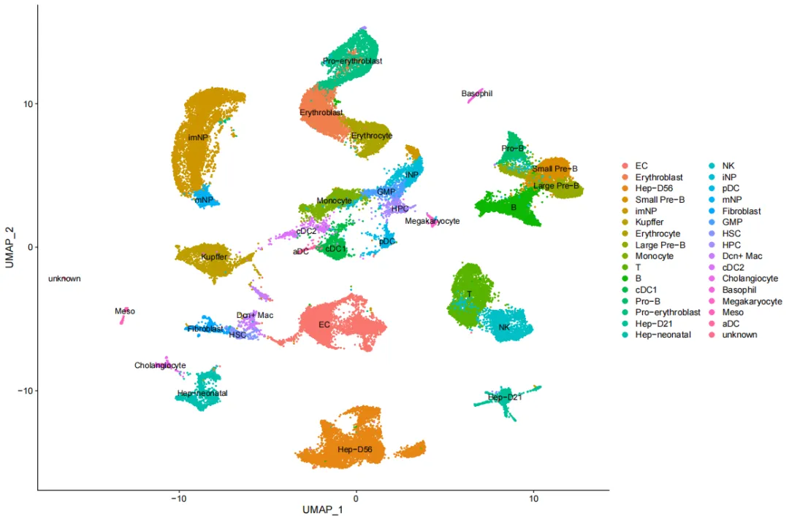
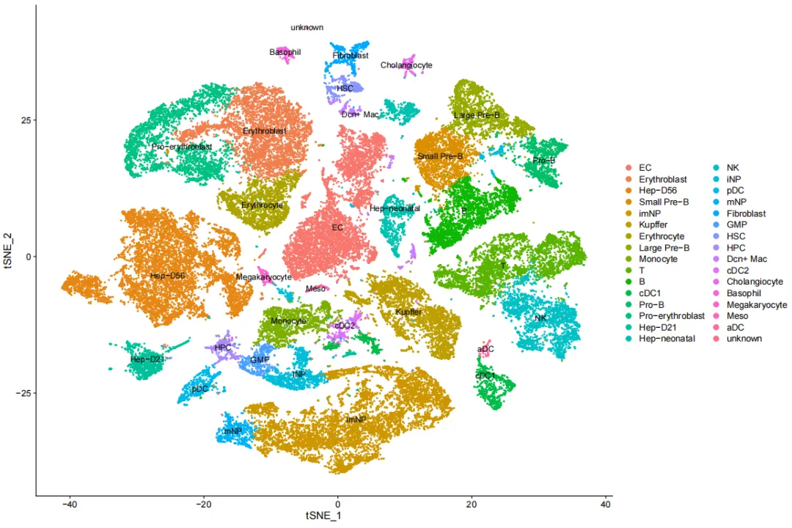
6) 导出marker基因表达的Dotplot
# 先调整细胞的顺序，调整为和文章顺序一致
# 读入根据Figure 1B手打的细胞顺序列表
cell_order <- read.table('../02_result/01_seurat/0502_cell_order.list', sep = '\t')
# 使用factor进行排序，第一遍排反了，所以levels这里加了个rev
Idents(mmu) <- factor(Idents(mmu), levels= rev(cell_order$V1))
# 这里我为了和文章中保持一致，使用了subset去除了我们没注释出来的一个unknown簇
mmu <- subset(mmu, idents = 'unknown', invert = TRUE)
# 绘制marker基因的Dotplot
# 创建pdf文件，设置画布的宽高
pdf('../02_result/01_seurat/0502_anno_Dotplot.pdf', width=12, height=12)
# 绘制marker基因的Dotplot
DotPlot(mmu, features = features) + RotatedAxis()
# 关闭pdf文件并保存结果
dev.off()
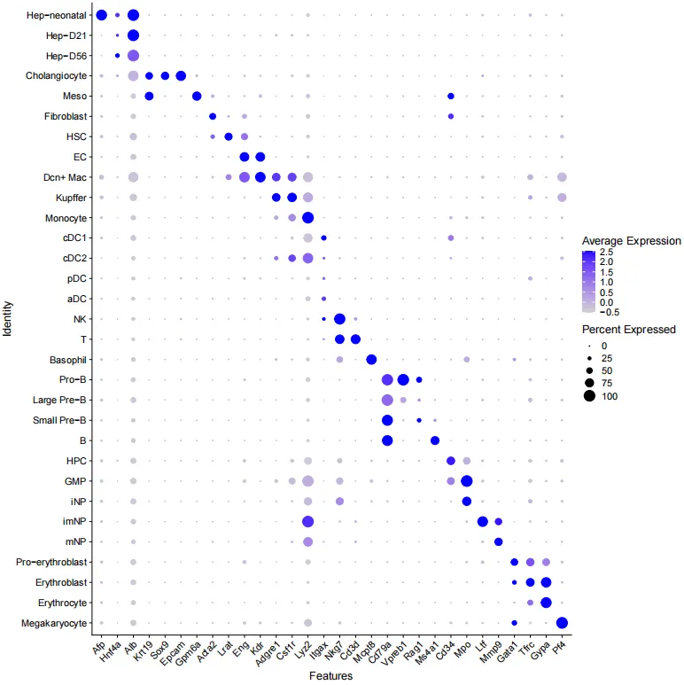
14、绘制不同时期的细胞umap图
1) 匹配原数据的时间点信息
# 由于本分析的细胞数量和作者提供的注释信息的细胞数量略有差异，因此在匹配时间信息的时候，需要一些处理
# 输出本分析的barcode信息
write.table(rownames(mmu@meta.data), file = '../02_result/01_seurat/0503_cell_barcode.list', quote =FALSE, row.name = FALSE, col.name = FALSE)
# 处理原文章给的metadata文件; 注意，此处使用system函数相当于切换到linux命令行上操作
system("sed -i 's/\"//g' ../00_data/GSE171993_metadata.csv")
# 匹配时间点信息，将输出的barcodes文件与metadata中的信息进行匹配，同时将没有匹配上的信息写为unknown，此行命令也需要system函数在linux命令行上执行
system("awk -F"[\t,]" 'NR==FNR{a[$1]=$8}NR!=FNR{print $1"\t"a[$1]}' ../00_data/GSE171993_metadata.csv ../02_result/01_seurat/0503_cell_barcode.list|awk -F"\t" '{if($2=="") $2 = "unknown"; print }' > ../02_result/01_seurat/0503_cell_timepoint.list")
2) 读入并匹配时间点信息
# 读入匹配好的时间点信息
timepoint <- read.table('../02_result/01_seurat/0503_cell_timepoint.list', quote="\t")
# 查看mmu@meta.data中的内容
head(mmu@meta.data)
## orig.ident nCount_RNA nFeature_RNA percent.mt RNA_snn_res.3
## AAACCTGCACCAGTTA-1 mmu_liver 11685 2913 0.9328199 10
## AAACCTGCACCATGTA-1 mmu_liver 18998 3483 0.7842931 33
## AAACCTGGTGAAATCA-1 mmu_liver 10178 2787 1.0709373 5
## AAACCTGTCAGTCCCT-1 mmu_liver 20220 4748 0.8259149 13
## AAACGGGAGGACCACA-1 mmu_liver 7958 1215 0.3769791 14
## AAACGGGTCAAACCAC-1 mmu_liver 50000 5620 0.8180000 23
## seurat_clusters
## AAACCTGCACCAGTTA-1 10
## AAACCTGCACCATGTA-1 33
## AAACCTGGTGAAATCA-1 5
## AAACCTGTCAGTCCCT-1 13
## AAACGGGAGGACCACA-1 14
## AAACGGGTCAAACCAC-1 23
# 由于刚才输出的barcodes信息和mmu@meta.data中的barcodes信息本就是匹配的，因此直接赋值即可
mmu@meta.data$timepoint <- timepoint$V2
# 查看mmu@meta.data中的内容，发现确实多了一列timepoint信息
head(mmu@meta.data)
## orig.ident nCount_RNA nFeature_RNA percent.mt RNA_snn_res.3
## AAACCTGCACCAGTTA-1 mmu_liver 11685 2913 0.9328199 10
## AAACCTGCACCATGTA-1 mmu_liver 18998 3483 0.7842931 33
## AAACCTGGTGAAATCA-1 mmu_liver 10178 2787 1.0709373 5
## AAACCTGTCAGTCCCT-1 mmu_liver 20220 4748 0.8259149 13
## AAACGGGAGGACCACA-1 mmu_liver 7958 1215 0.3769791 14
## AAACGGGTCAAACCAC-1 mmu_liver 50000 5620 0.8180000 23
## seurat_clusters timepoint
## AAACCTGCACCAGTTA-1 10 D1
## AAACCTGCACCATGTA-1 33 D1
## AAACCTGGTGAAATCA-1 5 D1
## AAACCTGTCAGTCCCT-1 13 D1
## AAACGGGAGGACCACA-1 14 D1
## AAACGGGTCAAACCAC-1 23 D1
# 在此处，再清理掉timepoint信息为unknown的细胞
mmu <- subset(mmu, timepoint == 'unknown', invert = TRUE)
# 我们会发现，细胞数终于和文章给的过滤后的细胞数一样了，不过这个无伤大雅啦
mmu
## An object of class Seurat
## 24043 features across 52834 samples within 1 assay
## Active assay: RNA (24043 features, 2000 variable features)
## 3 dimensional reductions calculated: pca, umap, tsne
3) 绘制各时间点的umap图
# 先按照时间顺序排列
mmu@meta.data$timepoint <- factor(mmu@meta.data$timepoint, levels = c("D1", "D3", "D7", "D21", "D56"))
#绘制umap图
# 创建pdf文件，设置画布的宽高
pdf("../02_result/01_seurat/0503_timepoint_dimplot.pdf", height=10, width=40)
# 绘制umap图
DimPlot(mmu, reduction = "umap", pt.size = 1, split.by = 'timepoint', group.by = 'timepoint')+NoLegend()
# 关闭pdf文件并保存结果
dev.off()
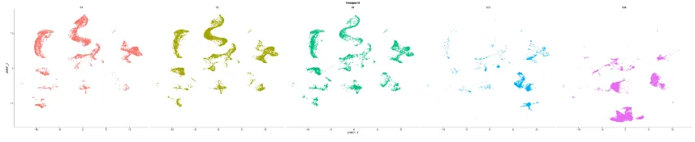
4) 存储总的mmu对象
# 存储总的mmu对象，后面基本很少用到了
saveRDS(mmu, file = "../02_result/01_seurat/0503_anno_mmu.rds")
15、提取五个时间点的Hep子集进行seurat基础分析
1) 提取五个时间点的Hep子集
# 提取三个Hep簇
Hep <- subset(mmu, idents = c("Hep-neonatal", "Hep-D21", "Hep-D56"))
# 查看Hep对象
Hep
## An object of class Seurat
## 24043 features across 9247 samples within 1 assay
## Active assay: RNA (24043 features, 2000 variable features)
## 3 dimensional reductions calculated: pca, umap, tsne
# 可以看到，提取出的子集中，包含9247个细胞(原数据中是9137个细胞)
2) 重新降维聚类分群
# 数据标准化：
Hep <- NormalizeData(Hep, normalization.method = "LogNormalize", scale.factor = 10000)
## Performing log-normalization
## 0% 10 20 30 40 50 60 70 80 90 100%
## [----|----|----|----|----|----|----|----|----|----|
## **************************************************|
# 鉴定高可变基因
Hep <- FindVariableFeatures(Hep, selection.method = "vst", nfeatures = 2000)
## Calculating gene variances
## 0% 10 20 30 40 50 60 70 80 90 100%
## [----|----|----|----|----|----|----|----|----|----|
## **************************************************|
## Calculating feature variances of standardized and clipped values
## 0% 10 20 30 40 50 60 70 80 90 100%
## [----|----|----|----|----|----|----|----|----|----|
## **************************************************|
# 缩放数据
# 选定Hep对象的所有行名信息，即所有基因名信息
all.genes <- rownames(Hep)
# 对所有基因进行数据缩放
Hep <- ScaleData(Hep, features = all.genes)
## Centering and scaling data matrix
## |======================================================================| 100%
# PCA降维
Hep <- RunPCA(Hep, features = VariableFeatures(object = Hep))
## PC_ 1
## Positive: Wfdc21, Orm1, Car3, Mup11, Mup21, Gstm1, Akr1c6, Selenbp2, Mup7, Hamp
## Serpina12, Cml2, Aldh1a1, Uroc1, Sds, Gsta3, Mup17, Thrsp, Elovl3, Acaa1b
## Lpin1, Mup1, Gstp1, Nnmt, Cib3, Inmt, Cyp2c29, Cyp4a12a, Me1, Cyp2c50
## Negative: Csf1r, Vsig4, C1qc, Cd5l, Fcna, Sdc3, C1qb, Clec4f, C1qa, Lst1
## Adgre1, Tyrobp, Cybb, Cfp, Folr2, Ccl24, Wfdc17, Aif1, Ly86, Ctss
## Fcer1g, Spi1, Axl, Gngt2, Cd68, Cyba, Fcgr3, AF251705, Timd4, Ifi27l2a
## PC_ 2
## Positive: H19, Afp, Igf2, Mt1, Fabp5, Mt2, S100a9, S100a8, Ahsg, Apcs
## Gpc3, Stfa1, Ngp, Ngfrap1, Peg3, Meg3, BC100530, Grb10, Camp, Bex1
## Akr1b7, BC021614, Slc25a4, Bex4, Cd63, Bex2, Igfbp1, Hbb-bs, Cdkn1c, Lpl
## Negative: Orm1, Wfdc21, Car3, Mup21, Mup11, Thrsp, Aldh1a1, Gstm1, Malat1, Cml2
## Mup7, Cyp2c29, Serpina12, Selenbp2, Mup17, Neat1, Gstp1, Akr1c6, Uroc1, Cyp2c50
## Elovl3, Cyp4a12a, Hamp, Sds, Fasn, C6, Mup1, Nnmt, Ccl24, Creg1
## PC_ 3
## Positive: Cyp4a14, Cyp2b9, Meg3, Kng1, mt-Nd3, Agt, Lpl, Fn1, Ahsg, Itih3
## Itih2, Yam1, Hbb-bs, Sult2a1, Grb10, Peg3, Cyp3a44, Igfbp2, Malat1, Igf2
## Cyp2a22, Slc13a3, Sparc, Sult2a2, Hba-a2, Hba-a1, Marcks, Cyp3a11, Cyp2c37, Ehd3
## Negative: Rpl10, Rps2, Rps18, Rpl13a, Gstp1, Rpl32, Rpl26, Rps27a, Rpl17, Rplp0
## Rps16, Rps5, Rpl14, Rps3a1, Rpl18a, Rps11, Rpl13, Rps4x, Rpl21, Rps23
## Rplp1, Rps9, Rpl19, Rpl23, Rpl9, Rps6, Wfdc21, Rps24, Rpl23a, Gapdh
## PC_ 4
## Positive: Hbb-bt, Hba-a1, Hba-a2, Hbb-bs, Ahsg, Mt2, Apcs, Mt1, Afp, Ccl24
## Cyp2c69, Folr2, Akr1b7, Bex1, Tff3, Rbp2, H19, mt-Nd3, Igfbp1, Bex2
## Timd4, Clec4f, Vsig4, Cd68, Gpc3, Spink1, Aif1, Cfp, Cyp2c40, Igfbp2
## Negative: Aqp1, Ehd3, Kdr, Dnase1l3, Igfbp7, Gpihbp1, Tspan7, Ets1, Sparc, Eng
## Fcgr2b, Ptprb, Clec4g, Stab2, Fabp4, Flt4, Egfl7, Gpr182, Bmp2, Esam
## Stab1, Adgrf5, Ramp2, Flt1, Mest, Plxnc1, Timp3, Tinagl1, Gimap4, Cd93
## PC_ 5
## Positive: Neat1, Gm12909, Rsrp1, Malat1, Mlxipl, Gm4951, Pnisr, Lpin1, 4632427E13Rik, Gm38266
## RP24-351O18.4, Phlda1, Rbm4b, Gin1, Jun, B430010I23Rik, Gm26699, Gadd45g, Nr1i3, Kcnq1ot1
## Junb, Rgs16, Sds, RP23-348H21.2, Gm10319, RP23-227D7.6, Pdgfrl, Erdr1, E130102H24Rik, Foxq1
## Negative: Hba-a1, Hba-a2, Hbb-bs, Hbb-bt, Snca, Tmsb4x, Dnase1l3, Tmsb10, Igfbp7, Aqp1
## Clec4g, Fcgr2b, Ehd3, Gpihbp1, Kdr, Eng, Ptprb, Egfl7, Fabp4, Bpgm
## Sparc, Gpr182, Actb, Cd24a, Mkrn1, Crip1, Sult2a2, Hamp2, Gatm, Alas2
# 确定维度
# 创建pdf文件，设置画布的宽高
pdf("../02_result/01_seurat/06_Elbowplot_Hep.pdf", height=10, width=10)
# 绘制肘形图
ElbowPlot(Hep, ndims = 50)
# 关闭pdf文件并保存结果
dev.off()
# 这里的结果看来，选择30PCs即可
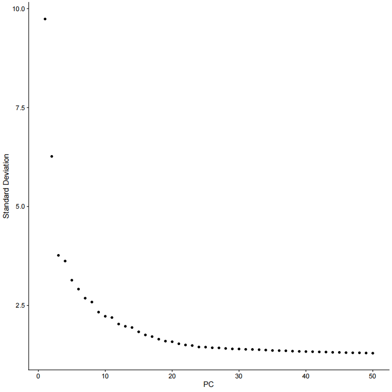
# 细胞聚类
# 计算最邻近细胞
Hep <- FindNeighbors(Hep, dims = 1:30)
## Computing nearest neighbor graph
## Computing SNN
# 聚类细胞
mmu <- FindClusters(mmu, resolution = 3.0)
## Modularity Optimizer version 1.3.0 by Ludo Waltman and Nees Jan van Eck
##
## Number of nodes: 9247
## Number of edges: 393029
##
## Running Louvain algorithm...
## 0% 10 20 30 40 50 60 70 80 90 100%
## [----|----|----|----|----|----|----|----|----|----|
## **************************************************|
## Maximum modularity in 10 random starts: 0.7381
## Number of communities: 33
## Elapsed time: 1 seconds
# 非线性降维
# 先跑一个UMAP的降维
Hep <- RunUMAP(Hep, dims = 1:30)
## 14:38:29 UMAP embedding parameters a = 0.9922 b = 1.112
## 14:38:29 Read 9247 rows and found 30 numeric columns
## 14:38:29 Using Annoy for neighbor search, n_neighbors = 30
## 14:38:29 Building Annoy index with metric = cosine, n_trees = 50
## 0% 10 20 30 40 50 60 70 80 90 100%
## [----|----|----|----|----|----|----|----|----|----|
## **************************************************|
## 14:38:30 Writing NN index file to temp file 05_tmp/RtmpqxEidJ/file5508fd6834b(这里隐藏一下电脑文件结构信息)
## 14:38:30 Searching Annoy index using 1 thread, search_k = 3000
## 14:38:34 Annoy recall = 100%
## 14:38:34 Commencing smooth kNN distance calibration using 1 thread with target n_neighbors = 30
## 14:38:35 Initializing from normalized Laplacian + noise (using irlba)
## 14:38:36 Commencing optimization for 500 epochs, with 416012 positive edges
## Using method 'umap'
## 0% 10 20 30 40 50 60 70 80 90 100%
## [----|----|----|----|----|----|----|----|----|----|
## **************************************************|
## 14:39:15 Optimization finished
# 再跑一个TSNE的降维
Hep <- RunTSNE(Hep, dims = 1:30)
# 输出降维分析的结果
# 创建pdf文件，设置画布的宽高
pdf("../02_result/01_seurat/06_Hep_dimplot.pdf", height=10, width=12)
# 将结果分为两页输出
par(mfrow = c(2, 1))
# 绘制UMAP图的结果
DimPlot(mmu, reduction = "umap")
# 绘制TSNE图的结果
DimPlot(mmu, reduction = "tsne")
# 关闭pdf文件并保存结果
dev.off()
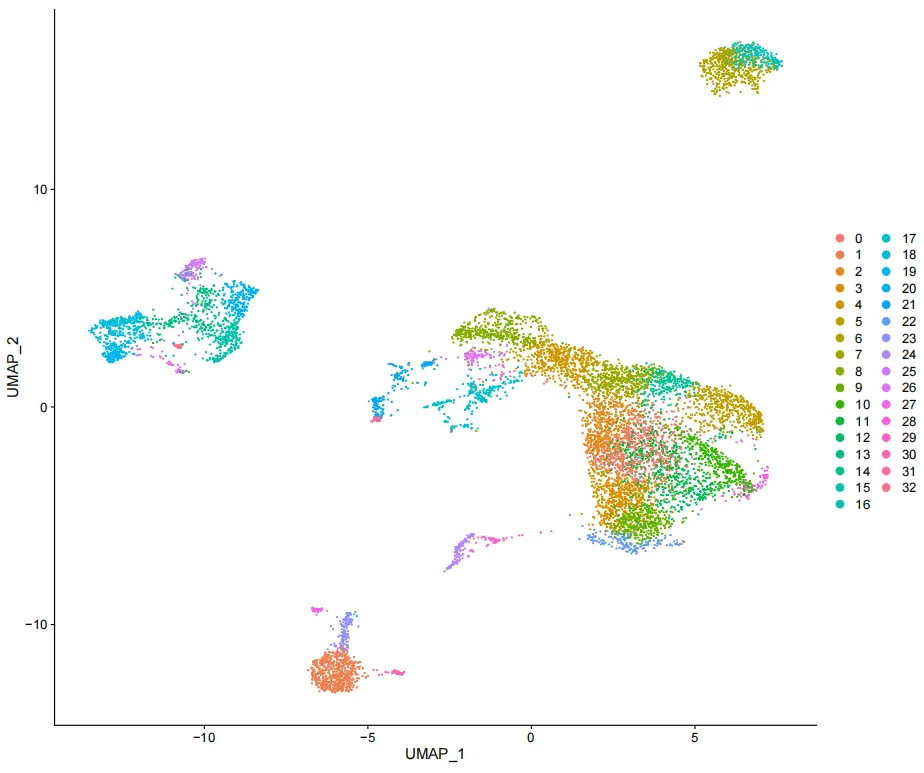
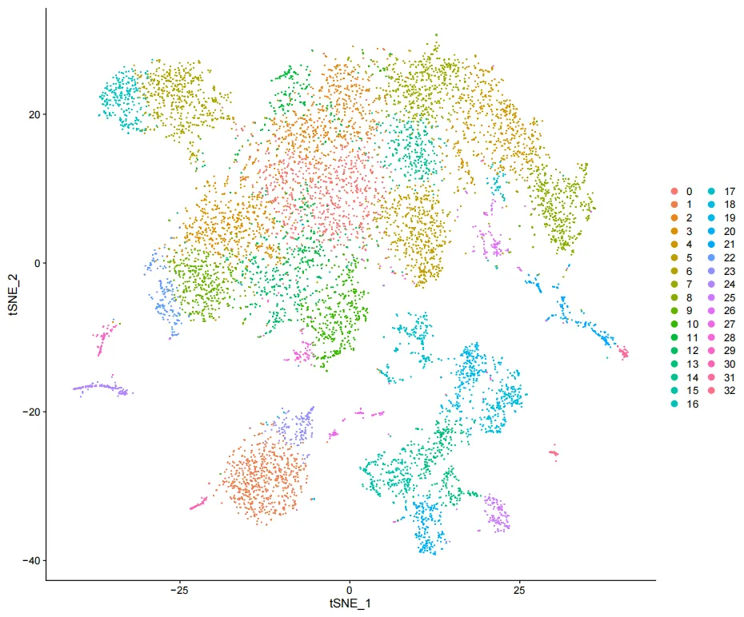
# 存储Hep子集的数据，方便后续分析加载
saveRDS(Hep, file = "../02_result/01_seurat/06_Hep_subset.rds")
3) 绘制tsne图
# 以时间点为区分标记，绘制tsne图
# 创建pdf文件，设置画布的宽高
pdf("../02_result/01_seurat/06_Hep_timepoint_dimplot.pdf", height=10, width=12)
# 以时间点为区分标记，绘制TSNE图
DimPlot(Hep, reduction = "tsne", pt.size = 1, label = TRUE, group.by = "timepoint")
# 关闭pdf文件并保存结果
dev.off()
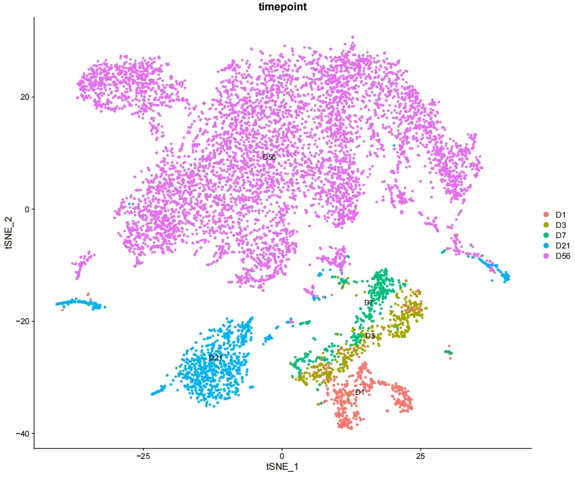
4) 绘制marker基因的表达情况
# 绘制marker基因表达的山脊图
# 创建pdf文件，设置画布的宽高
pdf('../02_result/01_seurat/06_Hep_Ridgeplot.pdf', width=12, height=4)
# 以时间点为区分标记，绘制Afp，Ahsg，H19三个基因表达的山脊图
RidgePlot(Hep, features = c("Afp", "Ahsg", "H19"), ncol = 3, group.by = "timepoint")
## Picking joint bandwidth of 0.202
## Picking joint bandwidth of 0.114
## Picking joint bandwidth of 0.113
# 关闭pdf文件并保存结果
dev.off()
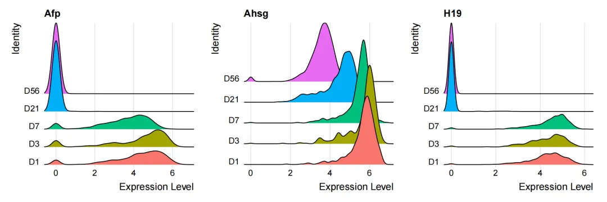
# 绘制marker基因表达的Featureplot
# 创建pdf文件，设置画布的宽高
pdf('../02_result/01_seurat/06_Hep_Featureplot.pdf', width=12, height=10)
# 绘制基因基因Mki67的Featureplot
FeaturePlot(Hep, features = "Mki67", reduction = "tsne", pt.size = 1, label.size = 4)
# 关闭pdf文件并保存结果
dev.off()
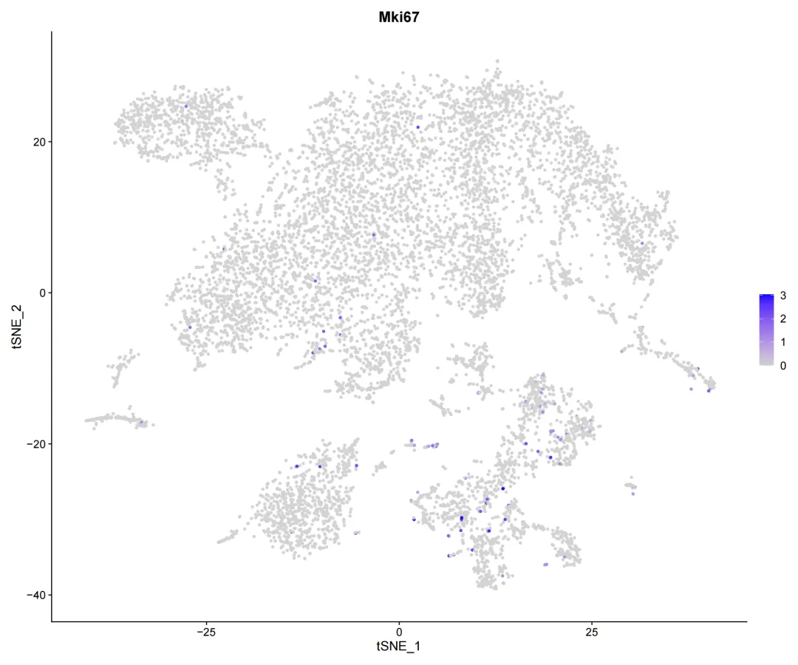
# 绘制marker基因表达的小提琴图
# 创建pdf文件，设置画布的宽高
pdf('../02_result/01_seurat/06_Hep_Vlnplot.pdf', width=12, height=4)
# 以时间点为区分标记，绘制Hnf4a，Cyp1a2，Cyp3a11三个基因表达的小提琴图
VlnPlot(Hep, features = c("Hnf4a", "Cyp1a2", "Cyp3a11"), ncol = 3, group.by = "timepoint")
# 关闭pdf文件并保存结果
dev.off()
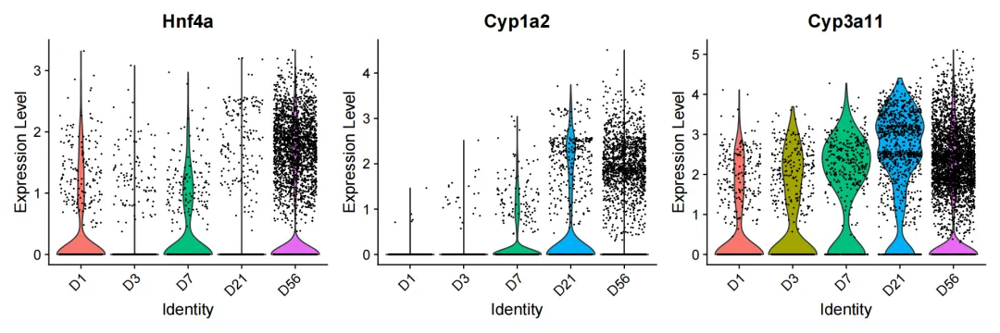
16、对五个时间点的Hep子集进行拟时序分析
1) 载入新需要的R包monocle
library(monocle)
## Loading required package: Matrix
## Loading required package: Biobase
## Loading required package: BiocGenerics
##
## Attaching package: ‘BiocGenerics’
##
## The following objects are masked from ‘package:stats’:
##
## IQR, mad, sd, var, xtabs
##
## The following objects are masked from ‘package:base’:
##
## anyDuplicated, aperm, append, as.data.frame, basename, cbind,
## colnames, dirname, do.call, duplicated, eval, evalq, Filter, Find,
## get, grep, grepl, intersect, is.unsorted, lapply, Map, mapply,
## match, mget, order, paste, pmax, pmax.int, pmin, pmin.int,
## Position, rank, rbind, Reduce, rownames, sapply, setdiff, sort,
## table, tapply, union, unique, unsplit, which.max, which.min
##
## Welcome to Bioconductor
##
## Vignettes contain introductory material; view with
## 'browseVignettes()'. To cite Bioconductor, see
## 'citation("Biobase")', and for packages 'citation("pkgname")'.
##
## Loading required package: ggplot2
## Loading required package: VGAM
## Loading required package: stats4
## Loading required package: splines
## Loading required package: DDRTree
## Loading required package: irlba
2) 构建monocle适用的CDS对象
# 提取Hep对象的信息构建monocle适用的CDS对象
# 先提取矩阵信息
count_matrix <- Hep@assays$RNA@counts
# 查看矩阵的内容
head(count_matrix)[ ,1:30]
## 6 x 30 sparse Matrix of class "dgCMatrix"
## [[ suppressing 30 column names ‘AACACGTAGTACGCCC-1’, ‘AACCATGCACCCATTC-1’, ‘AACTCCCCACGGACAA-1’ ... ]]
##
## Xkr4 . . . . . . . . . . . . . . . . . . . . . . . . . . . . . .
## Gm37180 . . . . . . . . . . . . . . . . . . . . . . . . . . . . . .
## Gm37329 . . . . . . . . . . . . . . . . . . . . . . . . . . . . . .
## Gm38148 . . . . . . . . . . . . . . . . . . . . . . . . . . . . . .
## Gm19938 . . . . . . . . . . . . . . . . . . . . . . . . . . . . . .
## Rp1 . . . . . . . . . . . . . . . . . . . . . . . . . . . . . .
# 再提取细胞类型对应的barcode信息，构建一个AnnotatedDataFrame名为pd
pd <- new('AnnotatedDataFrame', data = Hep@meta.data)
# 查看pd的信息
pd
## An object of class 'AnnotatedDataFrame'
## rowNames: AACACGTAGTACGCCC-1 AACCATGCACCCATTC-1 ...
## TTTGTCAAGCAGGCTA-10 (9247 total)
## varLabels: orig.ident nCount_RNA ... timepoint (7 total)
## varMetadata: labelDescription
# 再提取基因对应的基因名信息，构建一个AnnotatedDataFrame名为fd
# 提取矩阵中的行名构建一个以gene_short_name为列名的一列的dataframe
fData <- data.frame(gene_short_name = row.names(count_matrix), row.names = row.names(count_matrix))
# 查看fData的信息
head(fData)
## gene_short_name
## Xkr4 Xkr4
## Gm37180 Gm37180
## Gm37329 Gm37329
## Gm38148 Gm38148
## Gm19938 Gm19938
## Rp1 Rp1
# 构建一个名为fd的AnnotatedDataFrame
fd <- new('AnnotatedDataFrame', data = fData)
#查看fd的信息
fd
## An object of class 'AnnotatedDataFrame'
## rowNames: Xkr4 Gm37180 ... Erdr1 (24043 total)
## varLabels: gene_short_name
## varMetadata: labelDescription
# 构建monocle适用的CellDataSet对象
HSMM <- newCellDataSet(count_matrix, phenoData = pd, featureData = fd, expressionFamily = negbinomial.size())
# 查看HSMM对象信息
HSMM
## CellDataSet (storageMode: environment)
## assayData: 24043 features, 9247 samples
## element names: exprs
## protocolData: none
## phenoData
## sampleNames: AACACGTAGTACGCCC-1 AACCATGCACCCATTC-1 ...
## TTTGTCAAGCAGGCTA-10 (9247 total)
## varLabels: orig.ident nCount_RNA ... Size_Factor (8 total)
## varMetadata: labelDescription
## featureData
## featureNames: Xkr4 Gm37180 ... Erdr1 (24043 total)
## fvarLabels: gene_short_name
## fvarMetadata: labelDescription
## experimentData: use 'experimentData(object)'
## Annotation:
3) 评估尺寸因子和离散度
# 计算size factor
HSMM <- estimateSizeFactors(HSMM)
# 计算dispersion
HSMM <- estimateDispersions(HSMM)
## Removing 98 outliers
## There were 50 or more warnings (use warnings() to see the first 50)
4) 构建单细胞轨迹
# 由于我们在上面的分析中已经完成了细胞的分类工作，所以这里我们直接构建细胞轨迹
Step1：选择能够定义细胞过程的基因集
# 计算以timepoint这一特征作为分类标准的各簇的差异基因
diff_test_res <- differentialGeneTest(HSMM, fullModelFormulaStr = "~timepoint")
# 获取差异基因名作为排序基因用于细胞排序
ordering_genes <- row.names(subset(diff_test_res, qval < 0.01))
# 执行过滤，选择可以用于细胞排序的基因
HSMM <- setOrderingFilter(HSMM, ordering_genes)
# 创建pdf文件，设置画布的宽高
pdf('../02_result/01_seurat/06_Hep_Vlnplot.pdf', width=12, height=10)
# 绘制所有基因的分布，展示用于排序的基因
plot_ordering_genes(HSMM)
# 关闭pdf文件并保存结果
dev.off()
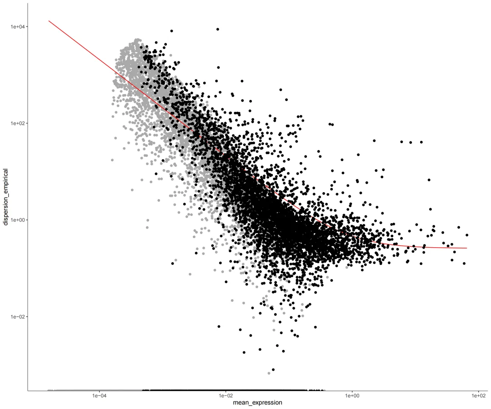
Step2：数据降维
# 采用monocle2的经典方法DDRTree降维
HSMM <- reduceDimension(HSMM, max_components = 2, method = 'DDRTree')
Step3：按照轨迹排序细胞
# 先创建一个状态函数，用于识别从“D1”位置开始的大多数细胞的状态
GM_state <- function(cds){
if (length(unique(pData(cds)$State)) > 1){
T0_counts <- table(pData(cds)$State, pData(cds)$timepoint)[,"D1"]
return(as.numeric(names(T0_counts)[which
(T0_counts == max(T0_counts))]))
} else {
return (1)
}
}
# 按照状态信息对细胞进行排序
HSMM <- orderCells(HSMM, root_state = GM_state(HSMM))
# 创建pdf文件，设置画布的宽高
pdf('../02_result/01_seurat/06_Hep_Vlnplot.pdf', width=20, height=12)
# 按照“timepoint”特征绘制细胞轨迹
plot_ordering_genes(HSMM, color_by = "timepoint")
# 关闭pdf文件并保存结果
dev.off()
# 创建pdf文件，设置画布的宽高
pdf('../02_result/01_seurat/06_Hep_Vlnplot.pdf', width=60, height=10)
# 按照“timepoint”特征绘制细胞轨迹
plot_cell_trajectory(HSMM, color_by = "timepoint", cell_size = 5, cell_name_size = 10) + facet_wrap(~timepoint, nrow = 1)
# 关闭pdf文件并保存结果
dev.off()
# 创建pdf文件，设置画布的宽高
pdf('../02_result/01_seurat/06_Hep_Vlnplot.pdf', width=20, height=10)
# 按照“timepoint”特征绘制细胞轨迹
plot_cell_trajectory(HSMM, color_by = "Pseudotime")
# 关闭pdf文件并保存结果
dev.off()
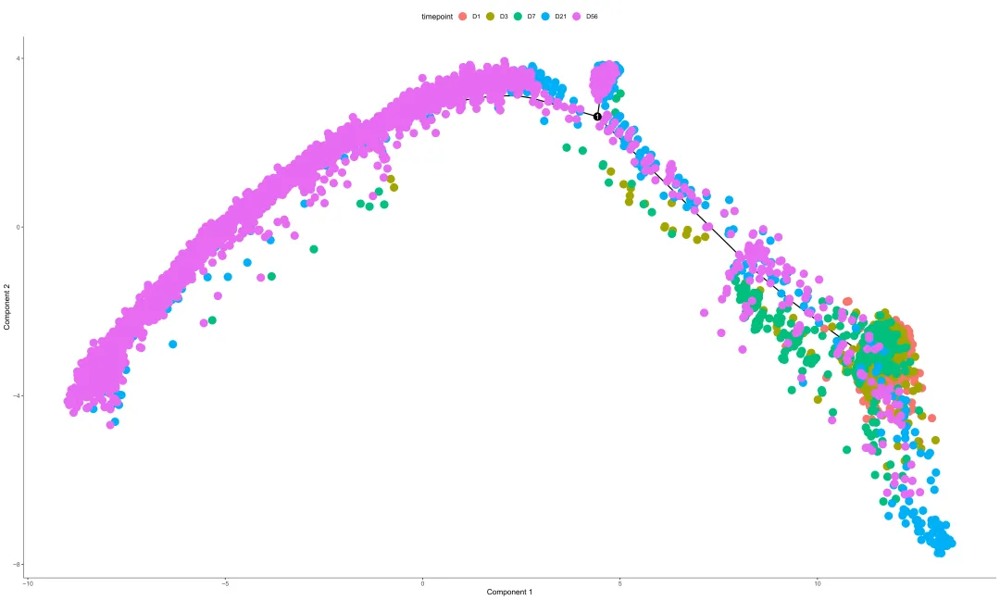
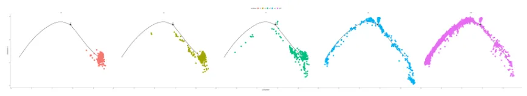
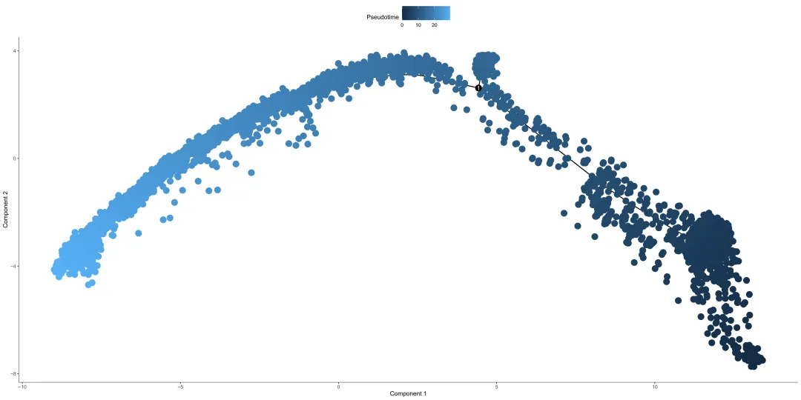
三、最终成品图
所有产出的图再经过Affinity Designer进行调整和拼接而成
01
二、测试文件及代码
如果你也想学习本文的代码和思路，我们给大家准备好了测试文件和代码。
链接：https://pan.baidu.com/s/1v8aekkRrEEAQx5WH5vvMtA?pwd=p4hl
提取码：p4hl
02
三、合作方介绍
本次活动由Biomamba生信基地 组织主办、北京寻因生物科技 有限公司独家冠名、科研者之家、西柚云超算联合赞助，设立总价值约50W 的科研助力基金。 北京寻因生物科技有限公司：
北京寻因生物科技有限公司（简称寻因生物）成立于2018年，秉承“用技术温暖生命，预见未来”的企业愿景，致力于全球单细胞市场标准普世化发展，推动单细胞技术在早筛、临床、药研等应用方向的深耕落地，为全球科学家、技术公司及药企工业等客户提供可信赖的高品质单细胞技术服务及实验室建设解决方案。
科研者之家：
科研者之家（www.home-for-researchers）是目前国内最知名的科研工具箱平台，以“科研不停，神器不止”为理念，自2019年上线以来，多款工具火爆科研界，如AI写作助手、Figdraw在线绘图平台、生信零代码平台、AI润色、DLP一键改写降重、中文版Pubmed、课题思路助手等。截止目前，包括Nature，Advanced Materials等顶级期刊在内，科研者之家相关科研工具被论文引用已超2300次之多。
西柚云超算：
西柚云是一家专注于科研共享计算的云服务基建型公司。于2022年推出独立研发的大禹共享型计算系统，具有实例动态迁移（拒绝传统型共享服务器单节点卡顿）、开箱即用的生信环境、每个用户拥有独立的实例和root权限等特性。
03
四、往期作品回顾
干细胞样CD4+ T细胞与自身免疫性血管炎 结直肠癌免疫图谱中的基因表达程序 MLP模型鉴定免疫细胞发育和瘤内T细胞耗竭的单细胞染色质图谱 T Cell单细胞参考图谱 小鼠纹状体单细胞基因变化图谱 人类肾脏snRNA-seq图谱拟时序分析 CellRank的教程重现 胶质瘤相关巨噬细胞scRNA图谱 肝癌单细胞分群marker scRNA揭示T1D骨髓与骨质减少的关系 微环境中肿瘤免疫屏障决定了免疫治疗的效果
04
**本次活动最终解释权归主办方所有!******主办方拥有对作品的编辑、宣发权利!

如何联系我们

 公众号后台消息回复不便，这里给大家留一下领取资料及免费服务器(足够支持你完成硕博生涯的生信环境)的微信号 ，方便各位随时交流、提建议（科研任务繁重，回复不及时请见谅）。此外呼声一直很高的交流群 也建好了，欢迎大家入群讨论：
公众号后台消息回复不便，这里给大家留一下领取资料及免费服务器(足够支持你完成硕博生涯的生信环境)的微信号 ，方便各位随时交流、提建议（科研任务繁重，回复不及时请见谅）。此外呼声一直很高的交流群 也建好了，欢迎大家入群讨论：
大家可以阅读完这几篇之后添加给生信入门初学者的小贴士 如何搜索公众号过往发布内容

 您点的每个赞和在看，我都认真当成了喜欢
您点的每个赞和在看，我都认真当成了喜欢